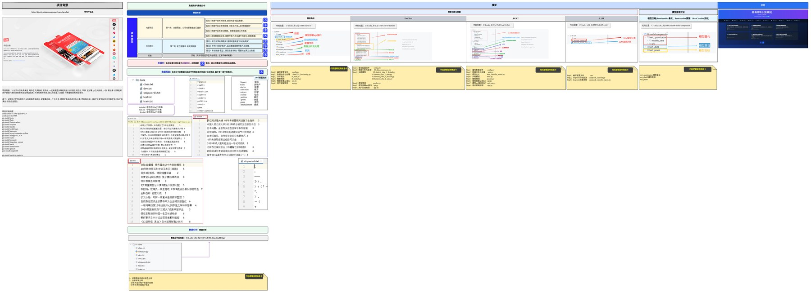
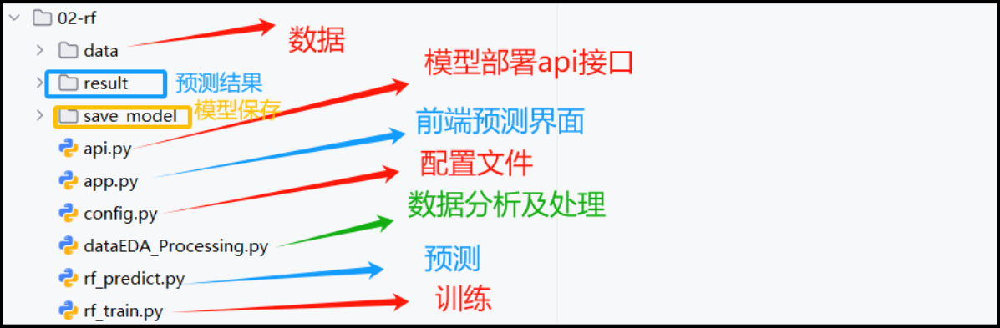
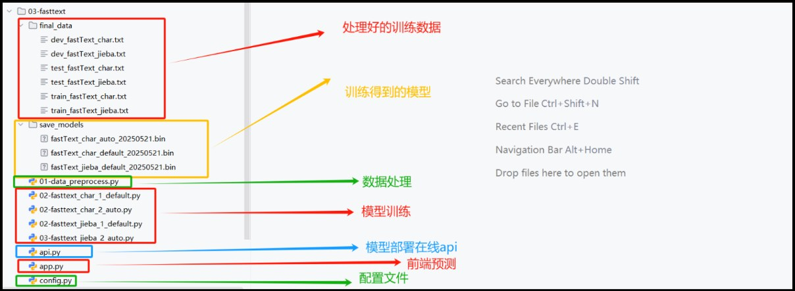
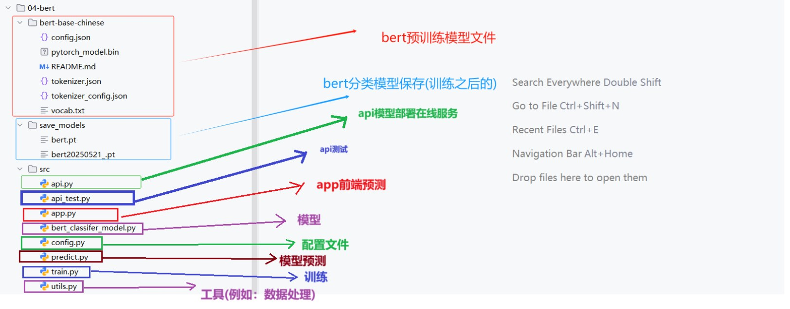
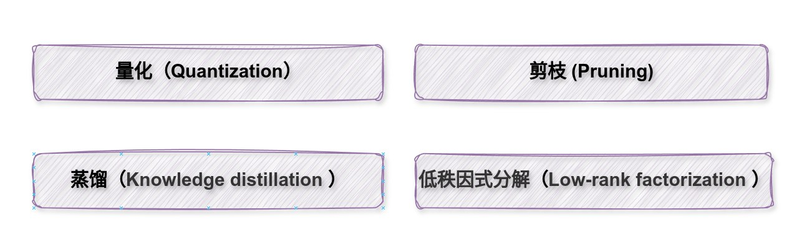
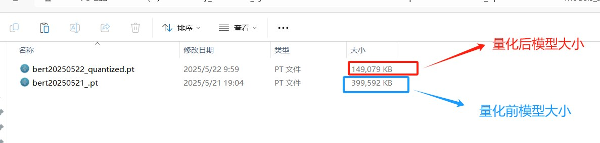
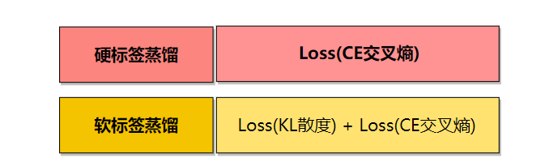
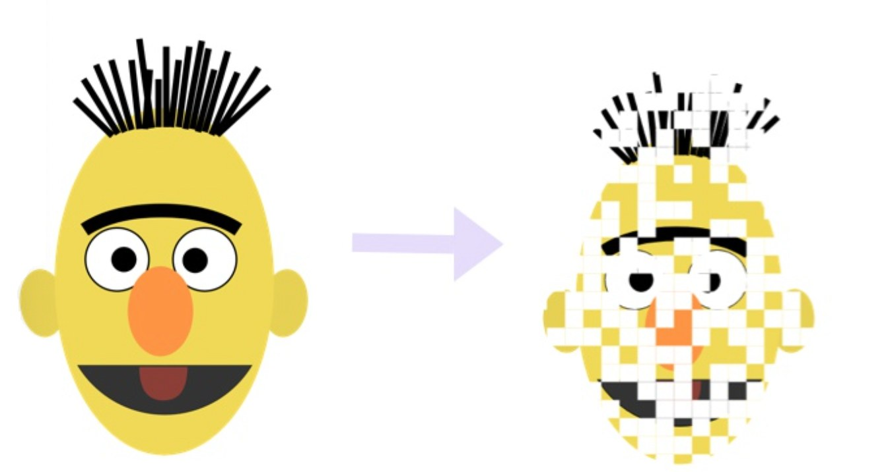

AI、机器学习、深度学习、NLP 与工业级文本分类项目实战
依据课程 PDF 与 NewsCompass“投满分”项目仓库持续扩展：新增完整的工业级新闻文本分类项目模块，覆盖数据审计、TF-IDF、FastText、BERT、LLM、API 部署、量化、蒸馏、剪枝、代码审查与复现路线。
AI、ML、NN、DL：概念地图
先知道每个概念在大图里的位置，后面学算法时才不会混淆。
人工智能（AI）是最大的集合，目标是让机器完成原本需要人类智能的任务。这里的“智能”可以通过很多方式实现，不一定都依赖训练数据，比如早期专家系统主要依赖人工编写规则。
机器学习（ML）是 AI 的一条重要路径。它的核心不是“手写全部规则”，而是“从数据中学习规则”。换句话说，人不再显式告诉机器每条判断规则，而是给机器样本和答案，让模型自己找到规律。
神经网络（NN）是一类模型结构，灵感来自生物神经元连接方式。它擅长拟合复杂的非线性关系，所以在图像、语音、文本等复杂任务中很常见。深度学习（DL）通常指多层神经网络。层数更深，表示能力更强，模型能逐层提取更抽象的特征。
| 概念 | 核心问题 | 典型例子 |
|---|---|---|
| AI | 如何让机器表现出智能？ | 搜索规划、专家系统、智能体 |
| ML | 如何让机器从数据中学习规律？ | 线性回归、KNN、随机森林 |
| NN | 如何用参数化网络拟合复杂函数？ | MLP、CNN、RNN |
| DL | 如何通过多层网络自动学习高级特征？ | 图像识别、语音识别、大语言模型 |
样本、特征、标签与任务类型
所有算法的入口，都是先明确输入是什么、输出是什么。
一份结构化数据中，每一行通常代表一个样本，每一列代表一个属性。能用于预测的属性叫特征（feature），最终要预测的结果叫标签（label / target）。当标签是连续数值时，任务通常叫回归；当标签是离散类别时，任务通常叫分类。
| 样本编号 | 培训学科 | 作业考试 | 学历 | 经验 | 工作地点 | 就业薪资 |
|---|---|---|---|---|---|---|
| 1 | Java | 90 | 本科 | 1 | 北京 | 14k |
| 2 | Java | 80 | 本科 | 1 | 武汉 | 10k |
| 3 | AI | 90 | 本科 | 0 | 北京 | 15k |
| n | AI | 91 | 本科 | 1 | ? | ? |
回归问题
预测的是一个连续值，例如房价、温度、销量、薪资等。输出不是类别，而是一个实数。常见评估指标有 MAE、MSE、RMSE、R²。
分类问题
预测的是类别或类别概率，例如垃圾邮件/非垃圾邮件、是否违约、电影类型、情感正负面等。常见指标有 accuracy、precision、recall、F1。
KNN 算法详解与动态演示
最适合入门讲解的算法之一：直观、可视化、能快速理解“学习”到底在做什么。
KNN（K Nearest Neighbors，K 近邻）是一个基于实例的学习算法。它训练阶段几乎不做复杂运算，而是“把数据记下来”；预测阶段才真正工作：把新样本和训练集中每个样本都算一遍距离，找出最近的 K 个邻居，然后根据这些邻居的标签进行投票。
K 值影响
K 太小：容易受噪声影响，模型不稳定。
K 太大：可能把本不相同的类别混在一起，边界变模糊。
通常用验证集或交叉验证选 K。
优缺点
优点：简单直观、无需显式训练、适合小数据集。
缺点：预测慢、对高维数据不友好、对特征缩放敏感。
"""KNN 从零实现：距离 -> 排序 -> 选 K 个近邻 -> 投票。"""
from collections import Counter
from math import sqrt
train_data = [
([1.0, 2.0], "蓝色类"),
([2.0, 1.5], "蓝色类"),
([3.0, 3.5], "红色类"),
([3.6, 2.8], "红色类"),
([1.8, 3.2], "蓝色类"),
([4.2, 1.2], "红色类"),
]
query = [2.8, 2.4]
def euclidean(a, b):
return sqrt(sum((x - y) ** 2 for x, y in zip(a, b)))
def knn_predict(dataset, sample, k=3):
distances = []
for features, label in dataset:
d = euclidean(features, sample)
distances.append((d, features, label))
distances.sort(key=lambda item: item[0])
neighbors = distances[:k]
votes = Counter(label for _, _, label in neighbors)
pred = votes.most_common(1)[0][0]
return pred, neighbors
pred, neighbors = knn_predict(train_data, query, k=3)
print("query =", query)
print("nearest neighbors =")
for d, feat, label in neighbors:
print(f" point={feat}, label={label}, distance={d:.3f}")
print("prediction =", pred)
梯度下降与线性回归
把“模型如何学习”讲透：从损失函数、梯度，到参数更新。
线性回归的目标是找到一条直线 ŷ = wx + b，让预测值 ŷ 尽量接近真实值 y。训练时通常会定义一个损失函数，例如均方误差 MSE：
参数和超参数
参数是模型从数据中学出来的，例如线性回归的 w 和 b。超参数是训练前人为设定的，例如学习率、迭代轮数、batch size。
梯度的含义
梯度表示“当前参数位置上，损失函数上升最快的方向”。我们要让损失下降，所以参数更新要沿负梯度方向移动。
"""线性回归 + NumPy 梯度下降：拟合 y = 3x + 2。"""
import numpy as np
rng = np.random.default_rng(7)
x = np.linspace(0, 10, 100)
y = 3 * x + 2 + rng.normal(0, 1.0, size=x.shape)
w, b = 0.0, 0.0
lr = 0.01
for epoch in range(1, 501):
y_hat = w * x + b
loss = np.mean((y_hat - y) ** 2)
grad_w = 2 * np.mean((y_hat - y) * x)
grad_b = 2 * np.mean(y_hat - y)
w -= lr * grad_w
b -= lr * grad_b
if epoch in {1, 2, 3, 10, 100, 500}:
print(f"epoch={epoch:>3} loss={loss:>8.4f} w={w:>7.3f} b={b:>7.3f}")
训练集 / 验证集 / 测试集 与 拟合问题
模型学得好不好，不能只看它做“见过的题”对不对。
学习参数
选择超参数
最终评估
训练集是模型真正用于学习的部分；验证集用于比较不同超参数或模型方案；测试集在所有调参结束后再使用，作用是模拟真实上线场景，估计模型对新样本的泛化能力。
欠拟合说明模型太弱、特征不足或者训练不够，训练集和测试集都表现差；过拟合说明模型把训练数据中的噪声都学进去了，训练集表现很好，但测试集表现差。解决过拟合常见方法包括增加数据、降模型复杂度、正则化、Dropout、早停等。
| 状态 | 训练集表现 | 测试集表现 | 常见应对 |
|---|---|---|---|
| 欠拟合 | 差 | 差 | 增强特征、换更强模型、训练更久 |
| 拟合合适 | 好 | 好 | 继续稳健验证 |
| 过拟合 | 很好 | 差 | 正则化、早停、更多数据、降复杂度 |
混淆矩阵与分类指标
这部分最容易“会背公式、不会解释”，所以需要可视化地把 TP、FP、TN、FN 讲清楚。
很多分类模型输出的并不是“直接的类别”，而是一个属于正类的概率。例如 0.82 表示模型认为这个样本是正类的置信度较高。此时必须选择一个阈值，例如 0.5、0.6、0.8，高于阈值就判为正类，否则判为负类。不同阈值会改变 TP、FP、TN、FN 的数量，从而影响 precision、recall、F1。
precision = TP / (TP + FP)
recall = TP / (TP + FN)
F1 = 2 × precision × recall / (precision + recall)
0
0
0
0
"""根据阈值把概率转成类别，并计算混淆矩阵和分类指标。"""
samples = [
(1, 0.95), (1, 0.82), (0, 0.77), (1, 0.66),
(0, 0.61), (1, 0.58), (0, 0.49), (0, 0.31),
(1, 0.27), (0, 0.14),
]
threshold = 0.60
y_true = [y for y, p in samples]
y_pred = [1 if p >= threshold else 0 for y, p in samples]
tp = sum(t == 1 and p == 1 for t, p in zip(y_true, y_pred))
fp = sum(t == 0 and p == 1 for t, p in zip(y_true, y_pred))
tn = sum(t == 0 and p == 0 for t, p in zip(y_true, y_pred))
fn = sum(t == 1 and p == 0 for t, p in zip(y_true, y_pred))
accuracy = (tp + tn) / len(y_true)
precision = tp / (tp + fp) if tp + fp else 0
recall = tp / (tp + fn) if tp + fn else 0
f1 = 2 * precision * recall / (precision + recall) if precision + recall else 0
print('threshold =', threshold)
print(f'TP={tp}, FP={fp}, TN={tn}, FN={fn}')
print(round(accuracy, 4), round(precision, 4), round(recall, 4), round(f1, 4))
recall；如果是短信推荐、广告触达等场景，可能更重视 precision，以减少误报。完整机器学习建模流程
让学生知道“一个项目不是只有训练模型这一步”。
数据处理
缺失值、异常值、重复值、类别编码、数值归一化，都是建模前必须做的准备工作。
特征工程
特征提取、特征构造、特征选择、降维等决定了模型能否看到有用信息。
部署与监控
上线不是结束。数据分布漂移、延迟、准确率下降都需要后续监控与迭代。
逻辑回归：从线性输出到概率输出
逻辑回归名字里虽然有“回归”，但它最经典的用途其实是二分类。
线性回归输出的是连续值，而逻辑回归希望输出一个 0 到 1 之间的概率。做法是先计算线性部分 z = w·x + b，再经过 Sigmoid 函数压缩到 0~1 之间：
如果 p >= 0.5，通常判为正类；反之判为负类。因此逻辑回归的本质是：先做线性加权，再把结果映射为“属于正类的概率”。
在训练时，逻辑回归常用的损失函数是交叉熵损失。它比均方误差更适合概率输出的分类问题，因为它会更强烈地惩罚“高置信度但预测错误”的情况。
| 模型 | 输出 | 适合任务 |
|---|---|---|
| 线性回归 | 任意实数 | 房价、销量、温度 |
| 逻辑回归 | 0~1 概率 | 是否流失、是否欺诈、是否患病 |
决策边界
当 w·x + b = 0 时，Sigmoid 输出正好是 0.5，这条边界就是模型把样本分成两类的分界线。
"""逻辑回归二分类：输出概率而不是直接输出类别。"""
import math
samples = [
([1.0, 2.0], 0),
([1.5, 1.8], 0),
([3.0, 3.2], 1),
([3.5, 4.0], 1),
]
# 假设已经训练得到一组参数
weights = [1.2, 1.0]
bias = -4.0
def sigmoid(z):
return 1 / (1 + math.exp(-z))
for x, y in samples:
z = sum(w * xi for w, xi in zip(weights, x)) + bias
p = sigmoid(z)
pred = 1 if p >= 0.5 else 0
print(f"x={x}, z={z:.3f}, p={p:.3f}, pred={pred}, y={y}")
决策树：从“连续提问”到可解释预测
依据课件中的生活化决策树、节点/分支/叶子结构，进一步补充分类树、回归树和动态划分示例。
决策树（Decision Tree）把预测过程组织成一连串“如果……那么……”的判断。内部节点保存一个特征和判断条件，分支代表判断结果，叶子节点给出最终类别或数值。它的优点是结构直观、几乎不需要特征缩放，并且可以同时处理数值特征和类别特征。
训练决策树的关键并不是随便选择问题，而是从候选特征和候选阈值中，寻找能让子节点更纯的划分。分类树常用信息增益或基尼下降衡量纯度改善；回归树常用划分前后平方误差的下降量。
回归树：选择使 SSE(parent) - SSE(left) - SSE(right) 最大的划分
ID3：信息熵、条件熵与信息增益
把“混乱程度”写成公式，再用信息增益决定根节点。
信息熵用于描述标签分布的混乱程度。一个节点中如果所有样本都属于同一类别，熵为 0；各类别比例越接近，熵越大。
使用特征 X 划分后，需要计算每个分支的熵，再按分支样本占比加权，得到条件熵。信息增益等于划分前的标签熵减去划分后的条件熵。
Gain(Y, X) = H(Y) - H(Y|X)
| 分布 | 熵 | 直觉 |
|---|---|---|
| [1.0, 0.0] | 0 | 完全纯净 |
| [0.8, 0.2] | 较小 | 大多数属于同一类 |
| [0.5, 0.5] | 1 bit | 二分类最混乱 |
"""ID3：计算标签熵、条件熵与信息增益。"""
import math
from collections import Counter, defaultdict
def entropy(labels):
n = len(labels)
return -sum((c / n) * math.log2(c / n) for c in Counter(labels).values())
def information_gain(feature, labels):
base = entropy(labels)
groups = defaultdict(list)
for x, y in zip(feature, labels):
groups[x].append(y)
conditional = sum(len(group) / len(labels) * entropy(group) for group in groups.values())
return base - conditional
labels = ['买', '买', '不买', '不买', '买', '不买']
age = ['青年', '青年', '青年', '中年', '中年', '老年']
income = ['高', '低', '低', '高', '高', '低']
print('H(Y) =', round(entropy(labels), 4))
print('Gain(age) =', round(information_gain(age, labels), 4))
print('Gain(income) =', round(information_gain(income, labels), 4))
CART：基尼指数、二叉划分与回归树
CART 既能分类也能回归，并且每个内部节点都做二叉划分。
CART 分类树
使用基尼指数衡量类别混乱。对候选特征和阈值，计算左右子节点的加权基尼，选择最小者。
CART 回归树
叶子输出通常是节点内目标值均值。划分时选择能让左右节点平方误差之和最小的阈值。
| 比较项 | ID3 | CART |
|---|---|---|
| 划分指标 | 信息增益 | 分类用基尼；回归用平方误差 |
| 树结构 | 可以多叉 | 严格二叉 |
| 任务 | 主要分类 | 分类和回归 |
| 工程常见度 | 教学常见 | 随机森林、GBDT 的基础树 |
决策树剪枝：控制复杂度，减少过拟合
课件区分预剪枝和后剪枝；这里进一步把常用超参数和实际调参方式联系起来。
预剪枝在构树过程中提前停止，例如限制最大深度、叶节点最少样本数或最小不纯度下降。它训练快，但可能过早停止而欠拟合。
后剪枝先生成较完整的树，再自底向上评估是否把子树替换为叶节点。它通常保留更多有用结构，泛化表现可能更好，但训练和验证成本更高。
| 参数 | 作用 |
|---|---|
max_depth | 限制树深 |
min_samples_split | 节点至少包含多少样本才允许继续划分 |
min_samples_leaf | 叶节点最少样本数 |
max_leaf_nodes | 限制叶节点数量 |
ccp_alpha | 代价复杂度后剪枝强度 |
from sklearn.tree import DecisionTreeClassifier
model = DecisionTreeClassifier(
criterion="gini",
max_depth=5,
min_samples_leaf=8,
ccp_alpha=0.002,
random_state=42,
)
model.fit(X_train, y_train)max_depth 和 min_samples_leaf，再使用代价复杂度路径选择 ccp_alpha。集成学习：Bagging 与 Boosting 两条主线
多个弱学习器组合成强学习器，但 Bagging 和 Boosting 的数据、训练顺序和投票方式不同。
集成学习的核心思想是：单个模型各有盲区，把多个具有差异的模型组合起来，可以获得更稳定、更准确的预测。课件把集成方法分为 Bagging 和 Boosting。
| 比较项 | Bagging | Boosting |
|---|---|---|
| 数据 | 对样本进行有放回抽样 | 通常使用全部样本，并根据前一轮结果调整关注重点 |
| 训练顺序 | 各学习器相互独立，可并行 | 前后依赖，串行训练 |
| 组合方式 | 平权投票或平均 | 加权求和或逐轮累加 |
| 主要作用 | 降低方差、提升稳定性 | 逐步降低偏差、修正错误 |
| 代表算法 | 随机森林 | GBDT、XGBoost |
随机森林：样本随机 + 特征随机 + 多树投票
把高方差的决策树变成稳定的集成模型。
为什么要有放回？
不同训练集既有重叠又有差异，既不会让每棵树完全相同，也不会让各树数据完全割裂。
为什么随机选特征？
如果所有树总用同一个强特征作为根节点，树之间会高度相关，平均后的收益变小。
OOB 评估
每棵树没有抽到的样本称为袋外样本，可用于近似验证集评估，无需额外切分一份数据。
"""scikit-learn 随机森林分类完整调用示例。"""
try:
from sklearn.datasets import load_iris
from sklearn.ensemble import RandomForestClassifier
from sklearn.model_selection import train_test_split
from sklearn.metrics import accuracy_score
except ImportError as exc:
raise SystemExit('请先安装 scikit-learn：pip install scikit-learn') from exc
X, y = load_iris(return_X_y=True)
X_train, X_test, y_train, y_test = train_test_split(
X, y, test_size=0.25, random_state=42, stratify=y
)
model = RandomForestClassifier(
n_estimators=200,
max_features='sqrt',
oob_score=True,
random_state=42,
n_jobs=-1,
)
model.fit(X_train, y_train)
pred = model.predict(X_test)
print('test accuracy =', accuracy_score(y_test, pred))
print('OOB score =', model.oob_score_)
print('feature importance =', model.feature_importances_)
GBDT：用下一棵树拟合上一轮的负梯度
平方损失下“负梯度”就是残差；其他损失下仍可沿负梯度方向逐步修正。
梯度提升不是让每棵树独立预测最终目标，而是让第 m 棵树学习当前模型仍然没有解释好的部分。首先用一个常数模型作为初始预测，然后不断增加小树：
rᵢₘ = -[∂L(yᵢ, F(xᵢ))/∂F(xᵢ)] at F=Fₘ₋₁
Fₘ(x) = Fₘ₋₁(x) + η · hₘ(x)
对于平方误差 L=(y-F)²/2，负梯度就是 y-F，也就是残差。因此“拟合残差”是理解 GBDT 最直观的入口。
对于分类问题，损失通常是 logloss，此时负梯度不再等于简单的“真实标签减预测类别”，而是与概率误差相关。
| 超参数 | 影响 |
|---|---|
n_estimators | 迭代树数量 |
learning_rate | 每棵树的修正步长 |
max_depth | 弱树复杂度 |
subsample | 每轮使用的样本比例 |
"""GBDT 回归的核心直觉：每轮拟合上一轮的残差。"""
import numpy as np
# 为了突出思想，用常数弱学习器代替真正的回归树。
y = np.array([90.0, 70.0, 50.0, 30.0])
pred = np.full_like(y, y.mean())
learning_rate = 0.5
print('initial prediction:', pred)
for round_id in range(1, 5):
residual = y - pred
weak_prediction = np.full_like(y, residual.mean())
pred = pred + learning_rate * weak_prediction
print(f'round={round_id}')
print(' residual:', residual)
print(' prediction:', pred)
XGBoost：二阶近似、正则化与高效实现
课件指出 XGBoost 在 GBDT 基础上引入二阶导数和正则化；这里补充叶子权重与增益的直觉。
XGBoost 的整体形式仍然是逐轮加树，但它把每一轮新增树的目标写成“损失下降 + 模型复杂度惩罚”。对损失做二阶泰勒展开后，每个样本只需保留一阶梯度 gᵢ 和二阶梯度 hᵢ。
Ω(f) = γT + 1/2 λΣwⱼ²
对一个固定叶节点，令该叶中样本的一阶梯度和为 G、二阶梯度和为 H，最优叶子权重和叶子得分可以写成：
二阶信息
不仅看下降方向，还利用曲率估计步长，使优化更精细。
正则化
惩罚叶子数量和叶子权重，主动控制树复杂度。
工程优化
支持列采样、行采样、缺失值默认方向和并行特征搜索。
"""XGBoost 二阶近似与叶子最优权重的简化计算。"""
# 对一个叶节点，给定样本的一阶梯度 g_i 和二阶梯度 h_i：
# 最优叶子权重 w* = -sum(g) / (sum(h) + lambda)
# 叶子得分 gain = 0.5 * sum(g)^2 / (sum(h) + lambda)
gradients = [-0.8, -0.3, 0.2, -0.5]
hessians = [0.25, 0.21, 0.16, 0.24]
reg_lambda = 1.0
G, H = sum(gradients), sum(hessians)
weight = -G / (H + reg_lambda)
gain = 0.5 * G * G / (H + reg_lambda)
print('G =', round(G, 4), 'H =', round(H, 4))
print('optimal leaf weight =', round(weight, 4))
print('leaf gain =', round(gain, 4))
from xgboost import XGBClassifier
model = XGBClassifier(
n_estimators=500,
learning_rate=0.05,
max_depth=6,
subsample=0.8,
colsample_bytree=0.8,
reg_lambda=1.0,
eval_metric="logloss",
random_state=42,
)
model.fit(X_train, y_train)聚类算法：在没有标签时发现数据内部结构
根据样本相似度自动分组，是典型的无监督学习任务。
聚类没有已知标签，模型只能根据特征之间的相似性组织样本。距离或相似度定义不同、特征缩放方式不同，最终簇结构也可能完全不同。
KMeans
基于质心，适合近似球状、方差相近的簇。
层次聚类
逐步合并或拆分簇，可生成树状图。
DBSCAN
基于密度，可发现任意形状簇并识别噪声点。
| 应用 | 聚类结果如何使用 |
|---|---|
| 用户画像与广告推荐 | 把消费行为相似的用户分成群体，制定差异化运营策略 |
| 新闻聚类 | 把同一事件的不同报道聚合到一起 |
| 异常检测 | 远离所有主要簇的样本可视为候选异常 |
| 基因分析 | 聚合表达模式相近的基因片段 |
KMeans：分配样本与更新质心的交替优化
动态演示每轮“分配 - 更新”的变化，并同步展示 SSE。
"""KMeans 聚类简化版：初始化中心 -> 分配样本 -> 更新中心。"""
import numpy as np
X = np.array([
[1.0, 1.0], [1.5, 2.0], [3.0, 4.0], [5.0, 7.0],
[3.5, 5.0], [4.5, 5.0], [3.5, 4.5]
])
centers = np.array([[1.0, 1.0], [5.0, 7.0]])
for step in range(1, 5):
dists = np.linalg.norm(X[:, None, :] - centers[None, :, :], axis=2)
labels = np.argmin(dists, axis=1)
new_centers = np.array([X[labels == k].mean(axis=0) for k in range(len(centers))])
print(f'step={step}')
print('labels =', labels.tolist())
print('centers =
', new_centers)
if np.allclose(new_centers, centers):
break
centers = new_centers
聚类评估：SSE、肘部法、轮廓系数与 CH 指标
没有真实标签时，需要用簇内紧密度和簇间分离度评价结果。
SSE / Inertia
簇内样本到质心的平方距离之和。K 增大时一定不增，因此不能仅选择最小 SSE。
轮廓系数
比较样本与本簇的平均距离 a，以及与最近其他簇的平均距离 b。
Calinski-Harabasz
比较簇间离散与簇内离散，通常越大越好。
"""KMeans：同时计算 SSE 和轮廓系数。"""
try:
from sklearn.cluster import KMeans
from sklearn.datasets import make_blobs
from sklearn.metrics import silhouette_score
except ImportError as exc:
raise SystemExit('请先安装 scikit-learn：pip install scikit-learn') from exc
X, _ = make_blobs(n_samples=500, centers=4, cluster_std=0.65, random_state=7)
for k in range(2, 8):
model = KMeans(n_clusters=k, n_init=10, random_state=7)
labels = model.fit_predict(X)
print(
f'k={k}, SSE={model.inertia_:.2f}, '
f'silhouette={silhouette_score(X, labels):.4f}'
)
案例：顾客数据聚类分析
复现课件中的“顾客分群”思路：预处理、选择 K、解释中心、形成运营策略。
| 候选特征 | 业务含义 |
|---|---|
| 年消费金额 | 用户价值 |
| 购买频次 | 活跃程度 |
| 距上次购买天数 | 流失风险 |
| 平均客单价 | 消费偏好 |
import pandas as pd
from sklearn.cluster import KMeans
from sklearn.preprocessing import StandardScaler
from sklearn.metrics import silhouette_score
features = ["annual_spend", "frequency", "recency", "avg_order_value"]
X = df[features].fillna(df[features].median())
X_scaled = StandardScaler().fit_transform(X)
for k in range(2, 9):
labels = KMeans(n_clusters=k, n_init=10, random_state=42).fit_predict(X_scaled)
print(k, silhouette_score(X_scaled, labels))
model = KMeans(n_clusters=5, n_init=10, random_state=42)
df["cluster"] = model.fit_predict(X_scaled)
print(df.groupby("cluster")[features].mean())机器学习与经典算法模块总结
从基础概念延伸到决策树、集成学习和聚类，形成完整的传统机器学习知识地图。
深度学习简介：从人工特征到自动表征学习
深度学习是机器学习的子集，以多层神经网络为核心，从原始数据中逐层学习更抽象的表示。
传统机器学习通常先由人设计特征，再交给分类器或回归器；深度学习把特征提取和任务预测放在同一个可训练网络中。图像浅层可学习边缘与颜色，中层组合纹理，深层识别物体；文本模型则从 token 表示逐步学习词义、句法和上下文关系。
课件强调四个特点：多层非线性变换、自动特征提取、可解释性较弱、依赖大数据和计算资源。因此它特别适合图像、语音和文本等高维非结构化数据。
CNN
局部连接与参数共享，适合图像。
RNN / LSTM
通过隐藏状态处理序列。
AutoEncoder / GAN
表示学习、重构与生成。
Transformer / GNN / RL
注意力、图结构和交互决策。
| 领域 | 典型任务 | 常见模型 |
|---|---|---|
| NLP | 文本分类、NER、翻译、对话、生成 | RNN、Transformer |
| CV | 图像分类、目标检测、图像分割 | CNN、ViT |
| 语音 | 识别、合成、音频事件检测 | CNN、RNN、Transformer |
| 推荐/医疗/制造 | 排序、诊断、异常检测、质量预测 | DNN、GNN、多模态模型 |
人工神经元、网络层与参数量
一个神经元的核心是“加权求和 + 偏置 + 激活函数”；多层网络就是反复堆叠这一过程。
z=xWᵀ+b线性加权求和。
a=φ(z)当前层输出。
(输入维度+1)×输出维度“+1”来自偏置。
若输入批次为 [batch,in_features]，权重为 [out_features,in_features]，输出就是 [batch,out_features]。PyTorch 的 nn.Linear 内部完成 XWᵀ+b。
"""全连接神经网络参数量计算。"""
def linear_params(in_features, out_features, bias=True):
return in_features * out_features + (out_features if bias else 0)
layers = [20, 128, 256, 4]
total = 0
for i, (din, dout) in enumerate(zip(layers, layers[1:]), 1):
count = linear_params(din, dout)
total += count
print(f"layer{i}: ({din}+1)*{dout} = {count:,}")
print("total parameters:", f"{total:,}")
(3+1)×5=20，并区分输入层、隐藏层、输出层、内部状态值与激活值。激活函数：为网络注入非线性
没有激活函数，多层线性变换仍等价于一个线性模型，无法形成复杂决策边界。
W₂(W₁x+b₁)+b₂ 仍可合并成一次线性变换。激活函数把每层输出非线性变换，使网络可以逼近复杂函数。
| 函数 | 范围 | 优点 | 局限/用途 |
|---|---|---|---|
| Sigmoid | (0,1) | 可解释为概率 | 两端梯度接近 0；二分类输出 |
| Tanh | (-1,1) | 以 0 为中心 | 两端仍梯度消失 |
| ReLU | [0,∞) | 简单、正区间梯度稳定 | 负区间梯度为 0 |
| Leaky ReLU | (-∞,∞) | 负区间保留小梯度 | 需要负斜率超参数 |
| Softmax | 概率和为 1 | 多类概率分布 | 多分类输出层 |
"""常见激活函数及导数。"""
import math
def sigmoid(x): return 1 / (1 + math.exp(-x))
def relu(x): return max(0.0, x)
def leaky_relu(x, negative_slope=0.1): return x if x >= 0 else negative_slope * x
for x in [-4, -1, 0, 1, 4]:
s, t = sigmoid(x), math.tanh(x)
print(x, "sigmoid=", round(s,4), "sigmoid'=", round(s*(1-s),4),
"tanh=", round(t,4), "relu=", relu(x), "leaky=", leaky_relu(x))
参数初始化：打破对称性并稳定方差
初始化决定前向信号和反向梯度在深层网络中是稳定、衰减还是爆炸。
不能全 0
同层神经元得到完全相同的输出和梯度，始终学到同样特征，无法打破对称性。
随机值不能过大或过小
过大导致激活饱和或数值爆炸，过小则使信号和梯度快速衰减。
| 方法 | 思想 | 搭配 |
|---|---|---|
| 小随机数 | 打破对称性，适合浅层 | 简单网络 |
| Xavier | 按 fan_in/fan_out 平衡方差 | Sigmoid、Tanh |
| Kaiming | 考虑 ReLU 截断一半输入 | ReLU、Leaky ReLU |
| 偏置 | 通常初始化为 0 | 线性层、卷积层 |
"""Xavier 与 Kaiming 初始化及前向方差观察。"""
try:
import torch
from torch import nn
except ImportError as exc:
raise SystemExit("请先安装 PyTorch：pip install torch") from exc
torch.set_num_threads(1)
def build(depth=8, width=128, method="kaiming"):
layers = []
for _ in range(depth):
linear = nn.Linear(width, width)
if method == "xavier": nn.init.xavier_normal_(linear.weight)
elif method == "kaiming": nn.init.kaiming_normal_(linear.weight, nonlinearity="relu")
elif method == "zero": nn.init.zeros_(linear.weight)
nn.init.zeros_(linear.bias)
layers += [linear, nn.ReLU()]
return nn.Sequential(*layers)
x = torch.randn(512, 128)
for method in ["zero", "xavier", "kaiming"]:
y, variances = x, []
for layer in build(method=method):
y = layer(y)
if isinstance(layer, nn.ReLU): variances.append(y.var().item())
print(method, [round(v,4) for v in variances])
用 PyTorch 搭建多层全连接网络
输入维度、隐藏层、激活函数、初始化、输出和损失函数必须互相匹配。
Tanh/Sigmoid 常搭配 Xavier，ReLU/Leaky ReLU 常搭配 Kaiming。若使用 CrossEntropyLoss，输出层返回原始 logits，模型末尾不要手动 Softmax。
import torch
from torch import nn
class PriceClassifier(nn.Module):
def __init__(self, input_dim=20, class_num=4):
super().__init__()
self.fc1 = nn.Linear(input_dim, 128)
self.fc2 = nn.Linear(128, 256)
self.out = nn.Linear(256, class_num)
nn.init.kaiming_normal_(self.fc1.weight, nonlinearity="relu")
nn.init.kaiming_normal_(self.fc2.weight, nonlinearity="relu")
nn.init.xavier_normal_(self.out.weight)
def forward(self, x):
x = torch.relu(self.fc1(x))
x = torch.relu(self.fc2(x))
return self.out(x) # logits
model = PriceClassifier()
print(model)
print(sum(p.numel() for p in model.parameters()))损失函数：回归、二分类与多分类
损失函数把预测误差变成可求导标量，是反向传播和参数更新的起点。
| 任务 | 输出 | 损失 | PyTorch 推荐 |
|---|---|---|---|
| 回归 | 连续值 | MSE/MAE/Huber | nn.MSELoss() |
| 二分类 | 1 个 logit | Binary Cross Entropy | nn.BCEWithLogitsLoss() |
| 多分类 | C 个 logits | Softmax Cross Entropy | nn.CrossEntropyLoss() |
CrossEntropyLoss 已含 LogSoftmax；BCEWithLogitsLoss 已含 Sigmoid。不要重复激活。"""MSE、BCEWithLogitsLoss 与 CrossEntropyLoss。"""
try:
import torch
from torch import nn
except ImportError as exc:
raise SystemExit("请先安装 PyTorch：pip install torch") from exc
torch.set_num_threads(1)
print("MSE =", nn.MSELoss()(torch.tensor([2.5,4.0]), torch.tensor([3.0,5.0])).item())
print("BCEWithLogits =", nn.BCEWithLogitsLoss()(torch.tensor([1.4,-0.8]), torch.tensor([1.,0.])).item())
logits = torch.tensor([[1.2,2.4,0.2],[2.0,0.5,1.1]])
target = torch.tensor([1,0], dtype=torch.long)
print("CrossEntropy =", nn.CrossEntropyLoss()(logits,target).item())
前向传播、反向传播与链式法则
前向传播计算预测和损失；反向传播从损失出发，沿计算图求每个参数的梯度。
前向传播
输入依次经过线性层、激活层和输出层，得到 logits、概率与损失。
反向传播
从标量损失开始，利用链式法则从后往前计算所有参数偏导。
"""标量网络的前向传播与链式法则反向传播。"""
import math
x, y = 1.5, 1.0
w1, b1, w2, b2 = 0.8, -0.2, 1.1, 0.1
z1 = w1*x+b1; h=max(0.0,z1); z2=w2*h+b2; p=1/(1+math.exp(-z2)); loss=-math.log(p)
dz2=p-y; dw2=dz2*h; dh=dz2*w2; dz1=dh if z1>0 else 0.0; dw1=dz1*x
print(f"forward: z1={z1:.4f}, h={h:.4f}, z2={z2:.4f}, p={p:.4f}, loss={loss:.4f}")
print(f"gradients: dw1={dw1:.4f}, dw2={dw2:.4f}")
优化器：SGD、Momentum、AdaGrad、RMSProp 与 Adam
梯度决定方向，优化器决定如何利用历史梯度以及如何为各参数调节步长。
RMSProp: sₜ=βsₜ₋₁+(1-β)gₜ², wₜ=wₜ₋₁-ηgₜ/√(sₜ+ε)
"""在二维二次函数上比较 SGD 与 Momentum。"""
def grad(x,y): return 0.25*x, 4.0*y
def loss(x,y): return 0.125*x*x + 2.0*y*y
for method in ["sgd","momentum"]:
x,y,vx,vy=5.0,4.0,0.0,0.0
for _ in range(30):
gx,gy=grad(x,y)
if method=="sgd": dx,dy=0.18*gx,0.18*gy
else:
vx=0.85*vx+0.15*gx; vy=0.85*vy+0.15*gy; dx,dy=0.32*vx,0.32*vy
x,y=x-dx,y-dy
print(method, (round(x,4),round(y,4)), round(loss(x,y),6))
学习率与学习率衰减
学习率过小收敛慢，过大则震荡甚至发散；训练后期通常逐步减小。
w_new=w_old-learning_rate×gradient 中，梯度提供方向，学习率控制移动距离。常见策略是前期快速探索、后期精细收敛。
| 策略 | 规则 |
|---|---|
| StepLR | 每隔固定 epoch 乘 γ |
| MultiStepLR | 指定里程碑乘 γ |
| ExponentialLR | 每轮乘 γ |
optimizer.step() 后再调用 scheduler.step()。"""PyTorch 常见学习率衰减策略。"""
try:
import torch
except ImportError as exc:
raise SystemExit("请先安装 PyTorch：pip install torch") from exc
torch.set_num_threads(1)
p=torch.nn.Parameter(torch.tensor(1.0))
for name in ["step","multi","exp"]:
opt=torch.optim.SGD([p],lr=0.1)
sch=(torch.optim.lr_scheduler.StepLR(opt,4,0.5) if name=="step" else
torch.optim.lr_scheduler.MultiStepLR(opt,[3,7],0.5) if name=="multi" else
torch.optim.lr_scheduler.ExponentialLR(opt,0.9))
vals=[]
for _ in range(10): vals.append(opt.param_groups[0]["lr"]); opt.step(); sch.step()
print(name,[round(v,5) for v in vals])
正则化、Dropout 与 Batch Normalization
神经网络表达能力强，容易过拟合；正则化通过约束参数或训练过程提升泛化。
L1/L2
在数据损失上增加参数惩罚。L1 倾向稀疏；L2 平滑压缩权重，PyTorch 常用 weight_decay。
Dropout
训练时以概率 p 将激活置 0，保留激活缩放为 1/(1-p)；推理时关闭。
BatchNorm
先标准化，再使用可学习 γ、β 缩放和平移，稳定数值并加速收敛。
其他策略
更多数据、数据增强、早停、降低模型复杂度也能缓解过拟合。
"""Dropout 与 BatchNorm 的训练/推理差异。"""
try:
import torch
from torch import nn
except ImportError as exc:
raise SystemExit("请先安装 PyTorch：pip install torch") from exc
torch.set_num_threads(1); torch.manual_seed(0)
x=torch.tensor([[1.,2.,3.,4.],[2.,4.,6.,8.]])
drop=nn.Dropout(0.5); print("dropout train:\n",drop(x)); drop.eval(); print("dropout eval:\n",drop(x))
bn=nn.BatchNorm1d(4); bn.train(); print("batchnorm train:\n",bn(x)); bn.eval(); print("batchnorm eval:\n",bn(x))
model.eval()。DNN 手机价格区间分类：完整训练闭环
输入手机硬件特征，输出 0、1、2、3 四个价格区间，覆盖数据、模型、训练、验证与调优。
课件案例约有 2000 条数据、20 个输入特征，1600 条用于训练、400 条用于验证。模型由三个全连接层构成，隐藏层使用 ReLU，输出层产生 4 个 logits。
基础方案
SGD、固定学习率、三层全连接、交叉熵。
调优方向
Adam、输入标准化、学习率衰减、深度/宽度、训练轮数、Dropout、BatchNorm、早停。
"""合成手机参数数据上的四分类 DNN 案例。"""
try:
import torch
from torch import nn
from torch.utils.data import DataLoader, TensorDataset
except ImportError as exc:
raise SystemExit("请先安装 PyTorch：pip install torch") from exc
torch.set_num_threads(1); torch.manual_seed(42)
X=torch.randn(2000,20); score=1.6*X[:,0]+1.1*X[:,1]-0.8*X[:,2]+0.4*X[:,3]
y=torch.bucketize(score,torch.quantile(score,torch.tensor([.25,.5,.75])))
perm=torch.randperm(len(X)); tr,va=perm[:1600],perm[1600:]
loader=DataLoader(TensorDataset(X[tr],y[tr]),batch_size=64,shuffle=True)
valid=TensorDataset(X[va],y[va])
model=nn.Sequential(nn.Linear(20,128),nn.ReLU(),nn.Dropout(.2),nn.Linear(128,256),nn.ReLU(),nn.BatchNorm1d(256),nn.Linear(256,4))
loss_fn=nn.CrossEntropyLoss(); opt=torch.optim.Adam(model.parameters(),lr=1e-3)
for _ in range(8):
model.train()
for xb,yb in loader:
loss=loss_fn(model(xb),yb); opt.zero_grad(); loss.backward(); opt.step()
model.eval()
with torch.no_grad():
xv,yv=valid.tensors; acc=(model(xv).argmax(1)==yv).float().mean().item()
print("validation accuracy =",round(acc,4))
PyTorch 与 Tensor 基础
如果说 NumPy 的核心对象是 ndarray，那么 PyTorch 的核心对象就是 Tensor。
Tensor（张量）可以理解为“带有更多能力的多维数组”。它不仅能像 NumPy 一样做数值运算，还能配合 GPU 做加速计算，并且支持自动微分，这使它非常适合深度学习训练。
常见张量维度
0 维：标量，例如 3.14。
1 维：向量，例如 [1, 2, 3]。
2 维：矩阵，例如一张灰度图。
3 维及以上：图像批次、视频、序列特征等。
PyTorch 为什么适合教学
语法更贴近 Python，动态图机制更直观，便于逐步打印中间变量，是入门深度学习非常友好的框架。
张量创建、运算、索引和变形
这里是所有 PyTorch 代码的基本功。
创建方式
torch.tensor 按数据创建；zeros、ones、randn 按形状创建；还可以从 NumPy 数组转换而来。
形状操作
view / reshape 改形状，unsqueeze 增维，squeeze 去掉长度为 1 的维度，transpose/permute 调整维度顺序。
import torch
a = torch.tensor([[1, 2], [3, 4]], dtype=torch.float32)
print(a)
print(a.shape)
print(torch.zeros(2, 3))
print(torch.randn(2, 3))
print(a[0])
print(a[:, 1])
b = torch.arange(12)
print(b.view(3, 4))
print(b.reshape(2, 2, 3))自动微分与训练流程
深度学习训练的关键不是“写很多公式”，而是理解 forward / backward / update 这个闭环。
只要给张量设置 requires_grad=True，PyTorch 就会记录这个张量参与的运算过程，形成动态计算图。当我们执行 loss.backward() 时，PyTorch 会根据链式法则自动把梯度从损失反向传播到各个参数。
zero_grad() 清梯度，backward() 算梯度，step() 更新参数。常见错误
忘记 zero_grad() 会导致梯度累加；忘记 step() 参数不会更新；把验证阶段也放在梯度计算里会浪费显存，因此验证时常用 torch.no_grad()。
"""PyTorch 自动微分 + 线性回归训练流程。"""
import torch
from torch import nn
from torch.utils.data import DataLoader, TensorDataset
torch.manual_seed(0)
X = torch.linspace(-3, 3, 120).unsqueeze(1)
y = 2.0 * X - 0.5 + torch.randn_like(X) * 0.25
loader = DataLoader(TensorDataset(X, y), batch_size=16, shuffle=True)
model = nn.Linear(1, 1)
loss_fn = nn.MSELoss()
optimizer = torch.optim.SGD(model.parameters(), lr=0.05)
for epoch in range(1, 61):
for xb, yb in loader:
pred = model(xb)
loss = loss_fn(pred, yb)
optimizer.zero_grad()
loss.backward()
optimizer.step()
if epoch in {1, 2, 3, 10, 30, 60}:
print(epoch, loss.item(), model.weight.item(), model.bias.item())
PyTorch 模块总结
把张量、自动微分和模型训练连接起来。
学习 PyTorch 时要始终抓住三件事：数据用 Tensor 表示、模型是可学习的参数化函数、训练就是通过损失函数和反向传播不断调整参数。这三点理解透了，再学 CNN、RNN、Transformer 都会顺畅很多。
图像基础与卷积神经网络概述
依据 CNN 课件，从像素、通道和张量布局开始，再进入卷积、池化和分类网络。
图像由像素组成。灰度图通常用一个二维矩阵表示；彩色图常用 RGB 三个通道。传统图像库常使用 H×W×C，而 PyTorch 卷积层默认使用 N×C×H×W。
| 类型 | 典型取值 | 形状 |
|---|---|---|
| 二值图 | 0 / 1 | H×W |
| 灰度图 | 0~255 | H×W |
| RGB 真彩图 | 每通道 0~255 | H×W×3 或 3×H×W |
CNN 三个核心部分
浅层卷积核常学习边缘、角点和纹理；随着层数增加，后续层会组合低级特征，形成部件和物体级表示。局部连接与权重共享让 CNN 的参数量远小于把每个像素直接连接到全连接层。
卷积计算：局部点积、卷积核与特征图
用 5×5 输入和 3×3 卷积核逐位置演示卷积计算。
深度学习框架中的 Conv2d 实际通常计算互相关：卷积核不翻转，在输入局部窗口上做逐元素乘法再求和。每移动一个位置，就产生特征图中的一个数值。
局部感受野
一个输出位置只连接输入的一小块区域，符合图像的局部空间结构。
权重共享
同一个卷积核在整张图上重复使用，大幅减少参数。
平移等变
输入特征移动时，输出特征图中的响应也相应移动。
"""NumPy 从零实现二维卷积（更准确地说是互相关）。"""
import numpy as np
image = np.array([
[1, 1, 1, 0, 0],
[0, 1, 1, 1, 0],
[0, 0, 1, 1, 1],
[0, 0, 1, 1, 0],
[0, 1, 1, 0, 0],
], dtype=float)
kernel = np.array([
[1, 0, -1],
[1, 0, -1],
[1, 0, -1],
], dtype=float)
h_out = image.shape[0] - kernel.shape[0] + 1
w_out = image.shape[1] - kernel.shape[1] + 1
output = np.zeros((h_out, w_out))
for i in range(h_out):
for j in range(w_out):
patch = image[i:i+3, j:j+3]
output[i, j] = np.sum(patch * kernel)
print(output)
Padding、Stride、多通道与输出尺寸
掌握卷积层最常见的形状计算与参数量计算。
W_out = floor((W + 2P - D(K-1) - 1)/S + 1)
| 参数 | 含义 | 影响 |
|---|---|---|
| kernel_size K | 卷积核尺寸 | 局部观察范围 |
| stride S | 滑动步长 | 步长越大，输出越小 |
| padding P | 边缘填充 | 保留边缘信息并控制尺寸 |
| dilation D | 卷积核元素间隔 | 不显著增参即可扩大感受野 |
多通道卷积中，一个输出通道对应一个形状为 C_in×K_h×K_w 的卷积核组；各输入通道卷积结果相加，再加偏置，得到一个输出特征图。C_out 个卷积核组产生 C_out 个输出通道。
import torch
from torch import nn
x = torch.randn(8, 3, 32, 32)
conv = nn.Conv2d(
in_channels=3,
out_channels=16,
kernel_size=3,
stride=2,
padding=1,
)
y = conv(x)
print(x.shape) # [8, 3, 32, 32]
print(y.shape) # [8, 16, 16, 16]
print(sum(p.numel() for p in conv.parameters()))池化层：最大池化、平均池化与下采样
池化对每个通道独立处理，降低空间尺寸但不改变通道数。
最大池化保留局部最强响应，常用于突出是否出现某种特征；平均池化保留区域平均信息，输出更平滑。池化没有可学习权重。
课件强调池化可以降低计算量和内存消耗，并使模型对小范围平移和噪声更鲁棒。但过度池化会丢失精细位置信息。
通道规则
卷积会跨输入通道加权求和，而池化对每个通道分别计算，所以输出通道数与输入通道数相同。
"""最大池化与平均池化。"""
import numpy as np
x = np.array([
[1, 3, 2, 0],
[4, 6, 5, 1],
[2, 1, 7, 3],
[0, 2, 4, 8],
], dtype=float)
def pool(x, mode='max', kernel=2, stride=2):
h_out = (x.shape[0] - kernel) // stride + 1
w_out = (x.shape[1] - kernel) // stride + 1
out = np.zeros((h_out, w_out))
for i in range(h_out):
for j in range(w_out):
patch = x[i*stride:i*stride+kernel, j*stride:j*stride+kernel]
out[i, j] = patch.max() if mode == 'max' else patch.mean()
return out
print('max pool:\n', pool(x, 'max'))
print('avg pool:\n', pool(x, 'avg'))
max_pool = nn.MaxPool2d(kernel_size=2, stride=2)
avg_pool = nn.AvgPool2d(kernel_size=2, stride=2)CIFAR-10 图像分类案例：从数据到测试准确率
按照课件案例拆解数据加载、网络搭建、训练循环和测试评估。
CIFAR-10 包含 32×32 RGB 图像和 10 个类别。课件使用两组“卷积 + ReLU + 池化”，再连接全连接分类器。形状变化如下：
torchvision.datasets.CIFAR10 加载训练集和测试集，并进行张量化、归一化与数据增强。DataLoader 形成 mini-batch，训练集开启 shuffle。model.eval() 与 torch.no_grad()，统计准确率。"""CIFAR-10 CNN 教学骨架。默认只打印网络；传入 --train 才下载并训练。"""
import sys
try:
import torch
from torch import nn
except ImportError as exc:
raise SystemExit('请先安装 PyTorch：pip install torch torchvision') from exc
class SmallCNN(nn.Module):
def __init__(self):
super().__init__()
self.features = nn.Sequential(
nn.Conv2d(3, 6, kernel_size=3), # 32 -> 30
nn.ReLU(),
nn.MaxPool2d(2), # 30 -> 15
nn.Conv2d(6, 16, kernel_size=3), # 15 -> 13
nn.ReLU(),
nn.MaxPool2d(2), # 13 -> 6
)
self.classifier = nn.Sequential(
nn.Flatten(),
nn.Linear(16 * 6 * 6, 120),
nn.ReLU(),
nn.Linear(120, 84),
nn.ReLU(),
nn.Linear(84, 10),
)
def forward(self, x):
return self.classifier(self.features(x))
model = SmallCNN()
print(model)
print('output shape:', model(torch.randn(4, 3, 32, 32)).shape)
if '--train' in sys.argv:
print('请在此处接入 torchvision.datasets.CIFAR10、DataLoader、交叉熵和优化器。')
NLP 与文本预处理总览
文本不能直接输入模型：需要清洗、切分、分析、编码和规范长度，最终形成可训练的 X 与 y。
自然语言处理（NLP）的目标是让计算机理解和生成人类语言。理解类任务常称为 NLU，例如情感分类、命名实体识别；生成类任务常称为 NLG，例如翻译、摘要、问答和文本续写。语音系统中还常见 STT（语音转文字）与 TTS（文字转语音）。
文本预处理不是固定的一套步骤，而是根据语言、任务和模型准备输入。传统词袋模型、RNN 与 Transformer 所需的切分方式、长度策略和编码方式可能不同。
| 方向 | 典型任务 |
|---|---|
| NLU | 文本分类、情感分析、实体识别、检索 |
| NLG | 翻译、摘要、问答、文本生成 |
| 语音与文字 | STT、TTS、声纹识别 |
中文分词与 jieba 三种模式
中文没有天然空格边界，分词是文本编码和后续 NLP 任务的入口。
分词是把连续文字序列转换为词元序列。词元是模型处理文本的基本单位。中文分词难点在于边界不显式，例如“研究生命起源”可以因领域词典和语境产生不同切法。
| 模式 | 特点 | 典型 API |
|---|---|---|
| 精确模式 | 尽量得到最合理切分，适合文本分析 | jieba.lcut(text, cut_all=False) |
| 全模式 | 扫描出所有可能词，召回高但有重叠 | jieba.lcut(text, cut_all=True) |
| 搜索模式 | 在精确模式基础上切出较短词，适合倒排索引 | jieba.cut_for_search(text) |
jieba.load_userdict() 避免把领域词拆散。import jieba
import jieba.posseg as pseg
text = "传智教育是一家上市公司，旗下有黑马程序员品牌"
print(jieba.lcut(text, cut_all=False)) # 精确模式
print(jieba.lcut(text, cut_all=True)) # 全模式
print(list(jieba.cut_for_search(text))) # 搜索引擎模式
print([(x.word, x.flag) for x in pseg.cut(text)])
# 领域词典：每行可写“词语 词频 词性”
jieba.load_userdict("userdict.txt")词性标注与命名实体识别
二者都是词元级分类，但用途不同：POS 描述语法角色，NER 抽取专有实体。
词性标注 POS
为每个词标注名词、动词、形容词等类别。它可用于特征工程，例如统计名词或形容词比例，也可作为语法分析的基础。
命名实体识别 NER
识别人名、地名、机构名等专有实体。工程中常用 BIO 标签表示实体边界：B 表示实体开始，I 表示实体内部，O 表示非实体。
| 任务 | 输入单位 | 输出 | 典型用途 |
|---|---|---|---|
| POS | 词元序列 | 每个词元的词性 | 语法特征、信息抽取 |
| NER | 词元序列 | 实体类别与边界 | 知识图谱、检索、客服结构化 |
import jieba.posseg as pseg
sentence = "小明在北京大学学习自然语言处理"
for item in pseg.cut(sentence):
print(item.word, item.flag)
# NER 常用 BIO 标注示意：
# 小明/B-PER 在/O 北京大学/B-ORG 学习/O 自然语言处理/O文本语料分析：标签、句长、词频与词表
先理解数据，再决定最大长度、采样方式、类别权重和词表规模。
语料分析可以快速发现数据问题并指导超参数：标签不均衡可能需要类别权重或重采样；句长分布决定最大序列长度；高频词、低频词与词表大小影响稀疏度、内存和 OOV 比例。
标签分布
检查每类样本数量，避免只看 accuracy 掩盖少数类问题。
句长分布
关注均值、中位数、P90/P95，而不是盲目使用最长句。
词频分布
识别停用词、脏词、极低频词，并估算词表规模。
from collections import Counter
import pandas as pd
frame = pd.DataFrame({
"text": ["拉面很好吃", "服务很热情", "等待时间太长", "味道一般"],
"label": [1, 1, 0, 0],
})
frame["tokens"] = frame["text"].map(list) # 项目中替换为 jieba.lcut
frame["length"] = frame["tokens"].map(len)
print(frame["label"].value_counts())
print(frame["length"].describe())
print(Counter(token for row in frame["tokens"] for token in row).most_common(20))n-gram 特征：把局部词序加入特征空间
单词袋忽略词序；n-gram 用相邻共现词组补充局部顺序信息。
n-gram 把连续的 n 个词元视为一个组合特征。例如“自然 语言 处理”的 bigram 是“自然-语言”和“语言-处理”。n 是超参数：增大 n 可增强局部语义，但会显著扩大词表并增加稀疏性。
def ngrams(tokens, n):
return [tuple(tokens[i:i+n]) for i in range(len(tokens) - n + 1)]
tokens = ["自然", "语言", "处理", "很", "有趣"]
print(ngrams(tokens, 2))
print(ngrams(tokens, 3))文本长度规范：截断、PAD 与 Attention Mask
同一批张量必须形状一致：长文本截断，短文本补齐，并告诉模型哪些位置是真实词元。
最大长度也是超参数。设置过小会丢失信息；设置过大则增加显存、计算和 PAD 浪费。常用做法是根据训练集句长的 P90 或 P95 选择上限，再单独处理极长样本。
RNN 可配合 pack_padded_sequence 跳过 PAD 计算；Transformer 通常使用 Attention Mask，使 PAD 位置不参与注意力。
特殊词元
<PAD>：补齐长度。<UNK>：词表外词。<BOS>：序列开始。<EOS>：序列结束。
from torch.nn.utils.rnn import pad_sequence
import torch
sentences = [
torch.tensor([4, 8, 2, 9]),
torch.tensor([7, 3]),
torch.tensor([5, 1, 6]),
]
padded = pad_sequence(sentences, batch_first=True, padding_value=0)
mask = padded.ne(0)
print(padded)
print(mask)
# RNN 还可配合 pack_padded_sequence 跳过 PAD 位置。词袋、词频与 TF-IDF 编码
传统文本模型常把文档转换为“文档 × 词表”的稀疏矩阵。
独热 / 二值词袋
只记录词是否出现。简单直观，但不表达次数和语义相似度。
词频编码
记录词出现次数。高频常用词可能支配模型，需要归一化或停用词处理。
TF-IDF
同时考虑文档内词频与跨文档稀有度，提高“在本篇重要但在全局不普遍”的词权重。
IDF(t) = log((N + 1) / (DF(t) + 1)) + 1
from sklearn.feature_extraction.text import CountVectorizer, TfidfVectorizer
corpus = ["拉面 好吃 服务", "服务 一般 等待", "拉面 实惠 环境"]
count = CountVectorizer(token_pattern=r"(?u)\b\w+\b")
X_count = count.fit_transform(corpus)
print(count.get_feature_names_out())
print(X_count.toarray())
tfidf = TfidfVectorizer(token_pattern=r"(?u)\b\w+\b")
print(tfidf.fit_transform(corpus).toarray().round(3))词嵌入与预训练向量
Embedding 把离散词 ID 映射为低维稠密向量，并在训练中学习语义空间。
假设词表大小为 V、向量维度为 D，词嵌入矩阵形状为 [V, D]。输入 ID 本质上是在矩阵中查找对应行，因此 [B,L] 的 ID 张量会变成 [B,L,D]。
预训练 Word2Vec 或 GloVe 可以用更大语料学到语义关系，再加载进下游模型。可选择冻结参数，也可以继续微调。
<PAD>、<UNK> 等特殊 ID，并用 padding_idx 让 PAD 向量不参与更新。与稀疏编码的区别
词袋矩阵每一维对应具体词，维度大且稀疏；Embedding 的每一维不是人工命名特征，而是模型从任务中学习到的潜在语义方向。
import torch
from torch import nn
vocab_size, embedding_dim = 10000, 128
embedding = nn.Embedding(vocab_size, embedding_dim, padding_idx=0)
ids = torch.tensor([[12, 87, 5, 0], [9, 31, 0, 0]])
vectors = embedding(ids)
print(vectors.shape) # [batch=2, seq_len=4, embedding_dim=128]
# 加载预训练矩阵
pretrained = torch.randn(vocab_size, embedding_dim)
pretrained[0].zero_()
embedding = nn.Embedding.from_pretrained(pretrained, freeze=False, padding_idx=0)回译数据增强
把文本翻译到中间语言，再翻回原语言，以获得语义近似、表达不同的新样本。
适用场景
文本分类、意图识别等标签应在同义改写后保持不变的任务；尤其适合标注数据不足时扩充表达多样性。
质量风险
翻译可能改变情感、否定关系、实体名或专业术语。必须去重、过滤过短样本，并对高风险领域做人工抽查。
| 阶段 | 示例 |
|---|---|
| 原句 | 这家店的服务很好 |
| 中间语言 | The service at this store is very good. |
| 回译 | 这家门店的服务很不错 |
def back_translation(text, translate):
"""translate(text, source_lang, target_lang) 由你的翻译服务实现。"""
pivot = translate(text, source_lang="zh", target_lang="en")
augmented = translate(pivot, source_lang="en", target_lang="zh")
return augmented
# 质量控制：保持标签语义、过滤过短/重复结果、抽样人工检查。
# 原句：这家店服务很好
# 回译：这家门店的服务很不错RNN 与序列数据
序列数据的当前位置与前后位置有关，RNN 用循环隐藏状态携带历史信息。
循环神经网络（RNN）专门处理序列数据。与前馈网络不同，它在每个时间步接收当前输入 xₜ 和上一时刻隐藏状态 hₜ₋₁，从而把历史信息向后传递。
序列不一定是时间：文字、语音、音乐、传感器数据都可以看作有顺序的数据。RNN 常用于时间序列预测、语言模型、文本生成、翻译、情感分析、语音识别和音乐生成。
| 映射形式 | 任务例子 |
|---|---|
| 多对一 | 整句情感分类 |
| 多对多（等长） | POS、NER |
| 多对多（不等长） | 翻译、摘要 |
| 一对多 | 给定主题生成序列 |
yₜ = softmax(Wₕᵧhₜ + bᵧ)
PyTorch 词嵌入层：从词表索引到序列向量
RNN 不接收字符串，而是接收每个时间步的稠密向量。
| 参数 | 含义 |
|---|---|
num_embeddings | 词表总大小 V |
embedding_dim | 每个词向量维度 D |
padding_idx | PAD 对应行不参与梯度更新 |
import torch
from torch import nn
vocab_size, embedding_dim = 10000, 128
embedding = nn.Embedding(vocab_size, embedding_dim, padding_idx=0)
ids = torch.tensor([[12, 87, 5, 0], [9, 31, 0, 0]])
vectors = embedding(ids)
print(vectors.shape) # [batch=2, seq_len=4, embedding_dim=128]
# 加载预训练矩阵
pretrained = torch.randn(vocab_size, embedding_dim)
pretrained[0].zero_()
embedding = nn.Embedding.from_pretrained(pretrained, freeze=False, padding_idx=0)Vanilla RNN：参数共享、展开计算与 BPTT
图中看似有多个神经元，实际是同一个单元在不同时间步重复使用同一组参数。
在时间步 t，RNN 将当前输入和历史隐藏状态合并。所有时间步共享 Wₓₕ、Wₕₕ 和偏置，因此可以处理不同长度的序列。
oₜ = Wₕᵧhₜ + bᵧ
p(yₜ) = softmax(oₜ)
反向传播穿越时间 BPTT
训练时把 RNN 在时间上展开，损失对共享参数的梯度来自所有时间步，再沿时间链反向传播。
梯度消失与爆炸
连续乘以循环权重和激活函数导数，梯度可能指数衰减或放大。LSTM/GRU 缓解长期依赖；梯度裁剪可控制爆炸。
import torch
from torch import nn
class SimpleRNNCell(nn.Module):
def __init__(self, input_size, hidden_size):
super().__init__()
self.x2h = nn.Linear(input_size, hidden_size)
self.h2h = nn.Linear(hidden_size, hidden_size, bias=False)
def forward(self, x_t, h_prev):
return torch.tanh(self.x2h(x_t) + self.h2h(h_prev))
batch, seq_len, input_size, hidden_size = 2, 5, 8, 16
x = torch.randn(batch, seq_len, input_size)
cell = SimpleRNNCell(input_size, hidden_size)
h = torch.zeros(batch, hidden_size)
outputs = []
for t in range(seq_len):
h = cell(x[:, t], h)
outputs.append(h)
output = torch.stack(outputs, dim=1)
print(output.shape)torch.nn.utils.clip_grad_norm_(model.parameters(), max_norm=1.0)LSTM：让长期记忆沿细胞状态传递
LSTM 增加细胞状态 Cₜ，并用三个门控制遗忘、写入和输出。
iₜ = σ(Wi[hₜ₋₁,xₜ] + bi)
õₜ = σ(Wo[hₜ₋₁,xₜ] + bo)
C̃ₜ = tanh(Wc[hₜ₋₁,xₜ] + bc)
Cₜ = fₜ ⊙ Cₜ₋₁ + iₜ ⊙ C̃ₜ
hₜ = oₜ ⊙ tanh(Cₜ)
遗忘门 fₜ
决定旧细胞状态保留多少；接近 0 表示忘记，接近 1 表示保留。
输入门 iₜ
决定候选新信息写入多少。
输出门 oₜ
决定细胞状态有多少暴露到隐藏状态。
import torch
from torch import nn
x = torch.randn(4, 7, 16)
lstm = nn.LSTM(
input_size=16,
hidden_size=32,
num_layers=2,
batch_first=True,
)
output, (h_n, c_n) = lstm(x)
print(output.shape) # [4, 7, 32]
print(h_n.shape) # [2, 4, 32]
print(c_n.shape) # [2, 4, 32]GRU：用重置门与更新门简化 LSTM
GRU 没有独立细胞状态，参数更少、计算更快，常与 LSTM 作为并列基线。
zₜ = σ(Wz[hₜ₋₁,xₜ] + bz)
h̃ₜ = tanh(Wh[rₜ⊙hₜ₋₁,xₜ] + bh)
hₜ = (1-zₜ)⊙hₜ₋₁ + zₜ⊙h̃ₜ
重置门 rₜ
控制计算候选状态时使用多少历史信息。较小的重置门让模型更关注当前输入。
更新门 zₜ
在旧隐藏状态与候选新状态之间做插值，承担了 LSTM 中遗忘与输入门的部分作用。
| 比较 | RNN | GRU | LSTM |
|---|---|---|---|
| 门数量 | 0 | 2 | 3 |
| 独立细胞状态 | 无 | 无 | 有 |
| 参数量 | 最少 | 中等 | 最多 |
| 长依赖能力 | 较弱 | 较强 | 较强 |
import torch
from torch import nn
x = torch.randn(4, 7, 16)
gru = nn.GRU(16, 32, num_layers=2, batch_first=True)
output, h_n = gru(x)
print(output.shape) # [4, 7, 32]
print(h_n.shape) # [2, 4, 32]堆叠网络与双向网络
堆叠提高层级表征能力；双向结构同时利用前文与后文。
单层单向
每个位置只看到当前与过去信息，适合在线预测和自回归生成。
多层堆叠
下层输出作为上层输入，逐层组合局部特征形成更抽象表示。
双向网络
正向与反向分别编码，再拼接。适合分类、NER 等可看到完整句子的任务。
import torch
from torch import nn
x = torch.randn(8, 20, 64)
model = nn.LSTM(
input_size=64,
hidden_size=128,
num_layers=3,
batch_first=True,
bidirectional=True,
dropout=0.2,
)
output, (h_n, c_n) = model(x)
print(output.shape) # [8, 20, 256]，双向会拼接两个方向
print(h_n.shape) # [3*2, 8, 128]PyTorch RNN / LSTM / GRU API 与形状
最常见错误不是公式，而是把 batch、序列、层数和方向维度弄混。
output = [B,L,D×H]
h_n = [D×N,B,H]
LSTM 额外返回 c_n = [D×N,B,H]
| 参数 | 含义 |
|---|---|
input_size | 每个时间步输入特征维度，通常等于 embedding_dim |
hidden_size | 隐藏状态维度 |
num_layers | 堆叠层数 |
batch_first | 是否使用 [B,L,I] 排列 |
bidirectional | 是否使用两个方向 |
import torch
from torch import nn
B, L, I, H, N = 4, 10, 16, 32, 2
x = torch.randn(B, L, I)
rnn = nn.RNN(I, H, N, batch_first=True, bidirectional=True)
out, h_n = rnn(x)
print(out.shape) # [B, L, 2H]
print(h_n.shape) # [2N, B, H]
lstm = nn.LSTM(I, H, N, batch_first=True, bidirectional=True)
out, (h_n, c_n) = lstm(x)
gru = nn.GRU(I, H, N, batch_first=True, bidirectional=True)
out, h_n = gru(x)文本生成案例：Embedding → RNN → Linear → 采样
课件以歌词生成说明 RNN 文本生成；本页使用原创小语料展示同一训练与推理流程。
[t₀...tₙ₋₁]，目标 [t₁...tₙ]。import torch
from torch import nn
class CharacterGenerator(nn.Module):
def __init__(self, vocab_size, embed_dim=64, hidden_size=128):
super().__init__()
self.embedding = nn.Embedding(vocab_size, embed_dim)
self.rnn = nn.LSTM(embed_dim, hidden_size, batch_first=True)
self.head = nn.Linear(hidden_size, vocab_size)
def forward(self, token_ids, state=None):
vectors = self.embedding(token_ids)
features, state = self.rnn(vectors, state)
logits = self.head(features)
return logits, state
# 训练：输入序列 [t0,t1,...,t(n-1)]，标签右移为 [t1,t2,...,tn]
# 损失：CrossEntropyLoss(logits.reshape(-1,V), targets.reshape(-1))
# 推理：将上一步采样出的 token 再喂给模型，循环生成。从文本到模型输入：Token、ID、Embedding 与 Mask
Transformer 的输入不是字符串，而是形状明确的张量和掩码。
分词把字符串拆成模型词表中的 token。英文可能按单词或子词拆分，中文也可能按字符、子词或混合方式拆分。随后每个 token 被映射成整数 ID，并通过嵌入表查到一个 d_model 维向量。
Padding Mask
批次内句子长度不同，需要补齐；Padding Mask 告诉注意力忽略补齐位置。
Special Tokens
BERT 常使用 [CLS]、[SEP]、[MASK]；生成模型通常有 BOS/EOS 等边界 token。
静态与上下文表示
输入嵌入本身是静态的；经过自注意力后，同一 token 会因上下文不同得到不同表示。
import torch
from torch import nn
vocab_size, d_model = 32000, 512
embedding = nn.Embedding(vocab_size, d_model, padding_idx=0)
input_ids = torch.tensor([[101, 2057, 2293, 102], [101, 3185, 102, 0]])
x = embedding(input_ids) # [B=2, L=4, d_model=512]
padding_mask = input_ids.eq(0) # True 表示需要忽略
print(x.shape, padding_mask.shape)自注意力直觉：每个 token 都向整段上下文“提问”
Q 表示当前需要寻找的信息，K 表示可匹配的索引，V 表示真正被汇总的内容。
输入 X 通过三组可学习线性变换得到 Q=XWᴽ、K=XWᴷ、V=XWⱽ。某个 token 的 Query 与所有 Key 做点积，得到它对所有位置的相关性分数；softmax 将分数归一化为权重，再对 Value 加权求和。
这一步让“苹果”在“苹果很甜”和“苹果发布手机”中获得不同表示，因为它会分别关注“甜”和“手机/发布”等上下文。
Q / K / V 的类比
Query：我现在想找什么？
Key：我有哪些可供匹配的标签？
Value：如果你关注我，我真正提供什么内容？
Scaled Dot-Product Attention：矩阵形状逐步推导
从 X 到 Q/K/V、分数矩阵、缩放、Softmax 和输出，每一步都标明维度。
为什么除以 √dₖ？假设 Q、K 各维独立且方差约为 1，点积的方差会随 dₖ 增大。若分数过大，softmax 会变得极度尖锐，梯度接近 0；缩放能让数值保持在更稳定范围。
"""Scaled Dot-Product Attention：完整展示每一步的形状。"""
import math
import numpy as np
np.set_printoptions(precision=3, suppress=True)
X = np.array([
[1.0, 0.0, 1.0, 0.0],
[0.0, 1.0, 0.0, 1.0],
[1.0, 1.0, 0.0, 0.0],
], dtype=float) # [L=3, d_model=4]
# 为了便于理解，示例中直接令 Q=K=V=X。
Q = K = V = X
scores = Q @ K.T # [L, L]
scaled_scores = scores / math.sqrt(Q.shape[-1])
exp_scores = np.exp(scaled_scores - scaled_scores.max(axis=-1, keepdims=True))
weights = exp_scores / exp_scores.sum(axis=-1, keepdims=True)
output = weights @ V # [L, d_v]
for name, value in {
'X': X, 'Q': Q, 'K': K, 'V': V,
'scores': scores, 'scaled_scores': scaled_scores,
'weights': weights, 'output': output,
}.items():
print(f'\n{name} shape={value.shape}\n{value}')
多头注意力：在多个子空间学习不同关系
把 d_model 切成多个 head，每个 head 独立注意，再拼接并投影。
MultiHead(X) = Concat(head₁,…,headₕ)Wᴼ
若 d_model=768、h=12，常见设置是每个 head 的 d_k=d_v=64。各 head 可以关注不同模式：局部搭配、主谓关系、修饰关系、长距离指代等。拼接后通过 Wᴼ 融合回 d_model 维。
Head 1
"""PyTorch 多头注意力：观察输入、权重和输出形状。"""
try:
import torch
from torch import nn
except ImportError as exc:
raise SystemExit('请先安装 PyTorch：pip install torch') from exc
torch.manual_seed(0)
batch_size, seq_len, d_model, n_heads = 2, 5, 12, 3
x = torch.randn(batch_size, seq_len, d_model)
mha = nn.MultiheadAttention(
embed_dim=d_model,
num_heads=n_heads,
batch_first=True,
)
output, weights = mha(x, x, x, need_weights=True, average_attn_weights=False)
print('input :', x.shape) # [B, L, d_model]
print('output:', output.shape) # [B, L, d_model]
print('weights:', weights.shape) # [B, heads, L, L]
print('head-0 weights of sample-0:\n', weights[0, 0].round(decimals=3))
Encoder Block：残差、LayerNorm 与前馈网络
注意力负责位置间通信，FFN 负责逐位置加工；残差和归一化让深层训练可行。
输入
注意力子层
前馈子层
残差连接
子层学习“在输入基础上增加什么修正”，并为梯度提供较短通路。若子层暂时无用，可以学习接近零的修正。
LayerNorm
对每个 token 的特征维度归一化，减轻内部数值尺度变化，提高训练稳定性。它不像 BatchNorm 那样依赖批次统计。
FFN 对每个位置使用同一组两层全连接网络，位置之间不混合。第一层通常把维度从 d_model 扩展到 d_ff，经过非线性激活后再投影回来。注意力负责“从哪里取信息”，FFN 负责“如何加工和存储信息”。
| 结构 | 公式 | 特点 |
|---|---|---|
| Post-Norm | LN(x + Sublayer(x)) | 原始 Transformer 使用 |
| Pre-Norm | x + Sublayer(LN(x)) | 深层网络中梯度通常更稳定 |
"""Pre-Norm Transformer Encoder Block。"""
import torch
from torch import nn
class EncoderBlock(nn.Module):
def __init__(self, d_model=64, num_heads=4, d_ff=256, dropout=0.1):
super().__init__()
self.norm1 = nn.LayerNorm(d_model)
self.attn = nn.MultiheadAttention(d_model, num_heads, dropout=dropout, batch_first=True)
self.norm2 = nn.LayerNorm(d_model)
self.ffn = nn.Sequential(
nn.Linear(d_model, d_ff),
nn.GELU(),
nn.Dropout(dropout),
nn.Linear(d_ff, d_model),
)
self.dropout = nn.Dropout(dropout)
def forward(self, x, padding_mask=None):
h = self.norm1(x)
attn_out, weights = self.attn(
h, h, h,
key_padding_mask=padding_mask,
need_weights=True,
)
x = x + self.dropout(attn_out)
x = x + self.dropout(self.ffn(self.norm2(x)))
return x, weights
x = torch.randn(8, 20, 64)
block = EncoderBlock()
y, weights = block(x)
print(y.shape, weights.shape)
Decoder：因果 Mask、Cross-Attention 与自回归生成
训练时并行预测所有位置，推理时逐 token 生成。
Masked Self-Attention
Cross-Attention
FFN + 输出头
在编码器-解码器模型中，编码器最终输出会作为每层 Decoder Cross-Attention 的 K 和 V。Decoder 当前状态作为 Q，决定从输入序列中读取哪些信息。Decoder-only GPT 没有 Cross-Attention，只保留因果自注意力。
右移输入（shifted right）：训练目标是预测下一个 token。输入给 Decoder 的序列通常从 BOS 开始，并去掉最后一个 token；标签则去掉第一个 token，从而让第 t 个位置预测原序列的第 t+1 个 token。
"""因果掩码：当前位置只能看到自己和之前的 token。"""
import numpy as np
seq_len = 6
allow = np.tril(np.ones((seq_len, seq_len), dtype=int))
additive_mask = np.where(allow == 1, 0.0, -np.inf)
print('0/1 allow mask:\n', allow)
print('\nadditive mask used before softmax:\n', additive_mask)
位置编码：正弦余弦、可学习位置与相对位置
自注意力本身对顺序不敏感，必须显式加入位置信息。
PE(pos,2i+1)=cos(pos/10000^(2i/d_model))
同一对维度使用相同频率的 sine/cosine；低维变化快，擅长区分近邻位置，高维变化慢，覆盖更长距离。课件指出，维度增加时不可分辨的周期间隔会变大，并且这种编码不需要学习参数，还为相对位置方法提供了理论基础。
正弦余弦
固定函数，无额外参数，可在一定程度上外推到训练长度之外。
可学习位置嵌入
每个位置对应可训练向量，表达灵活，但通常受最大长度限制。
相对位置 / RoPE
直接在注意力关系中编码相对距离，更适合长文本和位置外推，是后续模型常用方向。
"""生成正弦余弦位置编码，并打印一个小型热力矩阵。"""
import math
import numpy as np
def positional_encoding(max_len: int, d_model: int) -> np.ndarray:
pe = np.zeros((max_len, d_model), dtype=float)
position = np.arange(max_len)[:, None]
div = np.exp(np.arange(0, d_model, 2) * (-math.log(10000.0) / d_model))
pe[:, 0::2] = np.sin(position * div)
pe[:, 1::2] = np.cos(position * div)
return pe
pe = positional_encoding(max_len=8, d_model=12)
np.set_printoptions(precision=3, suppress=True)
print('shape =', pe.shape)
print(pe)
三类架构：Encoder-only、Encoder-Decoder、Decoder-only
结构差异决定可见上下文、训练目标和最擅长的任务。
Encoder-only
代表：BERT。每个位置可以看到左右上下文。
Encoder-Decoder
代表：原始 Transformer、T5、BART。适合输入到输出的转换。
Decoder-only
代表：GPT。把任务统一为“根据前文继续生成”。
| 模型类型 | 训练目标 | 典型任务 | 每个位置可见范围 |
|---|---|---|---|
| Encoder-only | 掩码语言建模等 | 理解、分类、检索、序列标注 | 左右双向 |
| Encoder-Decoder | 条件序列生成 | 翻译、摘要、问答 | Encoder 双向；Decoder 看前缀和 Encoder |
| Decoder-only | Next Token Prediction | 对话、写作、代码、推理 | 只看当前及之前 token |
BERT：双向编码、MLM、NSP 与任务微调
利用 Encoder 得到每个 token 的双向上下文表示。
BERT 的输入通常由 Token Embedding、Position Embedding 和 Segment/Token-Type Embedding 相加。原始预训练包含两项任务：
Masked Language Model
随机遮住一部分 token，让模型利用左右上下文恢复原词。它使 BERT 能学习双向语言表示。
Next Sentence Prediction
判断句子 B 是否真实接在句子 A 后面。输入中使用 [SEP] 分隔句子，并用 segment embedding 区分。
| 下游任务 | 使用哪部分表示 | 输出头 |
|---|---|---|
| 文本分类 | [CLS] 表征 | Linear → 类别 logits |
| 实体识别 | 每个 token 表征 | 共享 Linear → 标签 logits |
| 抽取式问答 | 每个 token 表征 | 预测答案开始和结束位置 |
"""BERT 风格输出如何连接分类头和序列标注头。"""
try:
import torch
from torch import nn
except ImportError as exc:
raise SystemExit('请先安装 PyTorch：pip install torch') from exc
batch, seq_len, hidden, num_classes, num_tags = 4, 10, 768, 3, 9
encoder_output = torch.randn(batch, seq_len, hidden)
# 文本分类：使用 [CLS] 位置表征。
classification_head = nn.Linear(hidden, num_classes)
cls_logits = classification_head(encoder_output[:, 0, :])
# 实体识别：对每个 token 分别分类。
ner_head = nn.Linear(hidden, num_tags)
ner_logits = ner_head(encoder_output)
print('classification logits:', cls_logits.shape) # [B, C]
print('NER logits:', ner_logits.shape) # [B, L, tags]
GPT：Next Token Prediction 与自回归生成
训练目标简单统一：给定前文，预测下一个 token。
GPT 使用 Decoder-only 架构和因果掩码。训练时，序列中每个位置都产生一个词表 logits 向量，与下一个真实 token 计算交叉熵。由于所有位置的真实前缀已知，训练仍可并行；生成时则需要逐步循环。
| 策略 | 作用 |
|---|---|
| Greedy | 每步选最高概率，稳定但可能重复、缺乏多样性 |
| Temperature | 缩放 logits，控制分布尖锐程度 |
| Top-k | 仅在概率最高的 k 个 token 中采样 |
| Top-p | 选择累计概率达到 p 的最小候选集合 |
"""GPT 生成中的 temperature、top-k 和随机采样。"""
import math
import random
vocab = ['机器', '学习', '很', '有趣', '困难']
logits = [2.4, 1.8, 1.0, 0.7, -0.3]
def softmax(xs, temperature=1.0):
scaled = [x / temperature for x in xs]
m = max(scaled)
exps = [math.exp(x - m) for x in scaled]
total = sum(exps)
return [x / total for x in exps]
def top_k_filter(tokens, probs, k):
pairs = sorted(zip(tokens, probs), key=lambda x: x[1], reverse=True)[:k]
norm = sum(p for _, p in pairs)
return [(t, p / norm) for t, p in pairs]
for temperature in (0.4, 1.0, 1.8):
probs = softmax(logits, temperature)
candidates = top_k_filter(vocab, probs, k=3)
token = random.choices(
[t for t, _ in candidates],
weights=[p for _, p in candidates],
k=1,
)[0]
print(f'T={temperature}:', candidates, 'sample=', token)
大语言模型训练：预训练、SFT、偏好建模与 RLHF
课件概括为两个阶段、三个对齐步骤；这里补充每一步的数据和目标。
奖励模型：学习 preference(chosen > rejected)
RLHF：max E[reward] - β·KL(policy || reference)
数据层
去重、质量过滤、语言比例、代码与数学数据、版权与隐私治理。
优化层
大 batch、学习率预热与衰减、梯度裁剪、混合精度、分布式并行。
对齐层
有帮助、诚实、安全并不完全由预训练损失保证，需要额外偏好数据与评估。
评价指标：Perplexity、BLEU、ROUGE 与 Benchmark
单个指标只能观察能力的一部分，生成质量通常需要自动指标与人工评估结合。
Perplexity
真实 token 平均负对数似然的指数形式。越低表示模型对测试文本越不“困惑”，但不同词表和分词器之间不能简单横向比较。
BLEU
偏精确率方向，统计候选与参考答案的 n-gram 重合，并使用长度惩罚。常用于翻译。
ROUGE
偏召回率方向，衡量参考答案中的 n-gram 或最长公共子序列被覆盖多少。常用于摘要。
Benchmark
用数学、代码、常识、阅读理解、安全性等任务集系统评估；必须警惕数据污染和只针对榜单优化。
| 指标 | 适合回答的问题 | 主要局限 |
|---|---|---|
| PPL | 语言建模概率是否合理 | 不直接代表事实性、推理或有用性 |
| BLEU | 与参考翻译的词组匹配程度 | 同义改写可能被低估 |
| ROUGE | 参考摘要信息覆盖程度 | 只看表面重合，不保证事实正确 |
| 人工偏好 | 回答是否有帮助、清晰、安全 | 成本高且受标注标准影响 |
"""语言模型常见评价指标的简化计算示例。"""
import math
from collections import Counter
# Perplexity：已知真实 token 的负对数似然。
true_token_probabilities = [0.8, 0.5, 0.25, 0.9]
mean_nll = -sum(math.log(p) for p in true_token_probabilities) / len(true_token_probabilities)
ppl = math.exp(mean_nll)
print('perplexity =', round(ppl, 4))
# 简化的 unigram precision/recall，帮助理解 BLEU/ROUGE 的方向。
reference = '模型 使用 注意力 处理 上下文'.split()
candidate = '模型 使用 注意力 理解 上下文'.split()
ref_count, cand_count = Counter(reference), Counter(candidate)
overlap = sum((ref_count & cand_count).values())
precision = overlap / len(candidate) # BLEU 更偏精确率方向
recall = overlap / len(reference) # ROUGE 更偏召回率方向
print('unigram precision =', round(precision, 4))
print('unigram recall =', round(recall, 4))
发展主线与结构改进：从 Transformer 到现代大模型
不追逐易过时的排行榜，而是理解每一代模型主要解决了什么结构或训练问题。
Scaling Law
在一定范围内，扩大模型、数据和算力常带来可预测的损失下降，但三者需要匹配。
Emergent Abilities
某些任务能力在规模增加到一定区域后才明显出现，但评价方式和阈值选择也会影响“涌现”观察。
现代注意力改进
GQA 减少 K/V 头；MLA 压缩潜在表示；长上下文方法改善位置编码和内存占用。
Transformer 复习清单：从形状到训练与应用
能解释每个模块为什么存在，比只记住结构图更重要。
Q1：为什么需要 Q、K、V 三组投影？
它们把“匹配关系”和“被汇总内容”分离。Q/K 学习如何比较，V 学习真正传递什么信息。
Q2：为什么注意力复杂度随长度平方增长？
长度为 L 时需要构造 L×L 的两两分数矩阵。
Q3：残差、LayerNorm、FFN 各做什么？
残差保证信息和梯度通路；LayerNorm 稳定数值；FFN 对每个 token 的表示做非线性加工和知识存储。
Q4：Encoder-only 与 Decoder-only 的根本区别？
Encoder 允许双向上下文，适合理解；Decoder 使用因果掩码，训练目标与逐 token 生成一致。
Q5：RAG 与微调的区别？
RAG 在推理时检索外部知识；微调改变模型参数和行为。两者可以组合。
仓库审计：这份 Download ZIP 到底包含什么？
先确认资料的真实边界，再决定如何学习和复现。
压缩包中的主体是一个由 MkDocs 构建后的静态教学网站，站点名为 NewsCompass投满分项目V7.5。内容按“项目背景 → 数据及预处理 → 模型训练与部署 → 模型压缩”组织，覆盖随机森林、FastText、BERT、LLM API、量化、蒸馏和剪枝。
仓库中实际存在
HTML 教学页面、站点搜索索引、CSS/JavaScript、架构图、流程图、运行日志截图，以及大量嵌入式 Python 代码片段。
仓库中未实际提供
页面反复引用的 TMFCode/ Python 源码目录、train.txt/dev.txt/test.txt 数据集、BERT 权重、FastText 模型文件和训练产物。
├── index.html 课程首页
├── ① 项目背景/ 业务背景、项目架构
├── ② 数据及预处理/ 数据介绍、EDA
├── ③ 模型训练与部署/ RF、FastText、BERT、LLM
├── ④ 模型压缩/ 量化、蒸馏、剪枝
├── assets/ 图像、样式与脚本
└── TMFCode/ （文档引用，但压缩包中缺失）
examples/55–65。业务背景：新闻分类如何服务推荐系统
项目目标是短文本多分类；推荐排序是更大的上游/下游系统。
“投满分”来自新闻内容像快递一样被投递到对应频道的业务比喻。系统输入是一条新闻标题或短文本，输出是一个频道类别。分类结果可以作为推荐召回、频道流构建、内容审核、内容检索或用户兴趣建模的特征。
分类任务负责什么
判断内容属于财经、房产、股票、教育、科技、社会、时政、体育、游戏或娱乐中的哪一类，并返回置信度。
分类任务不负责什么
它并不直接决定“哪个用户应该看到哪篇新闻”。完整推荐系统还需要用户画像、召回、排序、重排、探索利用和反馈闭环。
十类标签体系
| 设计问题 | 必须在项目开始时明确 |
|---|---|
| 标签边界 | “财经”和“股票”、“社会”和“时政”、“科技”和“游戏”如何区分？ |
| 多主题新闻 | 只允许单标签，还是支持多标签？本项目按单标签设计。 |
| 拒识机制 | 不属于十类、信息太短、广告或乱码时是否输出 reject？ |
| 业务指标 | 只看 Accuracy 还是更重视每类 Recall、Macro-F1、延迟和成本？ |
端到端架构：从数据到在线服务与压缩
把仓库中的超大架构图拆解成可执行的六个阶段。

离线训练链路
数据版本 → 训练配置 → 模型产物 → 指标报告 → 模型注册。任何模型结果都应能追溯到数据、代码和超参数。
在线推理链路
请求校验 → 预处理 → 模型推理 → 标签映射 → 置信度/拒识 → 响应与日志。预处理必须与训练完全一致。
反馈闭环
监控低置信度、错误样本和分布漂移，定期回流标注并重新训练。模型上线不是项目终点。
class.txt 不一致；模型和 tokenizer 版本不匹配。数据集、文件格式与标签映射
理解数据规模只是第一步，更重要的是建立不会泄漏的切分与版本管理。
每行样本格式为 文本 数字标签，标签编号通过 class.txt 映射为英文类别名。训练集在讲义描述中是完全均衡的，但仍应通过代码验证，而不是只相信说明文档。
from pathlib import Path
import pandas as pd
CLASS_NAMES = [line.strip() for line in Path("class.txt").read_text(encoding="utf-8").splitlines()]
df = pd.read_csv("train.txt", sep="\t", names=["text", "label"], dtype={"text": str, "label": int})
assert df["text"].notna().all(), "存在空文本"
assert df["label"].between(0, len(CLASS_NAMES) - 1).all(), "标签越界"
assert not df.duplicated(["text", "label"]).any(), "存在重复样本"
df["length"] = df["text"].str.len()
print(df["label"].value_counts().sort_index())
print(df["length"].describe(percentiles=[0.5, 0.9, 0.95, 0.99]))数据来源的三种类型
| 类型 | 项目语境 | 典型风险 |
|---|---|---|
| 日志数据 | 点击、浏览、点赞、曝光、搜索等高频行为 | 噪声高、重复、缺失、时间漂移、埋点版本变化 |
| 业务数据 | 文章元数据、用户画像、订单、频道配置 | 字段口径变化、主键关联错误、更新延迟 |
| 第三方数据 | 公开数据集、合作数据、外部 API | 许可、质量、格式、隐私和分布差异 |
dev3.txt 进行快速验证。快速开发集与最终验证集应明确区分，避免把小集结果当成正式指标。数据质检与模型特定预处理
同一份文本，在随机森林、FastText、BERT 和 LLM 路线上需要不同的输入表示。
基础 EDA
样本数、标签分布、空文本、重复率、文本长度分位数、特殊字符、乱码、数字比例、英文比例、URL/表情和高频词。
错误分析 EDA
混淆最多的类别对、短文本错误、跨领域词、多主题新闻、低置信度样本和训练/线上分布差异。
| 路线 | 输入处理 | 关键产物 | 容易犯的错 |
|---|---|---|---|
| TF-IDF + 传统模型 | Jieba 或字符 n-gram、停用词、词频统计 | 训练集拟合的 vectorizer | 在全量数据上 fit 导致泄漏；线上忘记加载同一 vectorizer |
| FastText | 字符级或词级切分，前缀 __label__ | FastText 文本格式与 .bin | 训练文件名与预测切分方式不一致 |
| BERT | Tokenizer、特殊 token、padding、truncation、mask | tokenizer + checkpoint + class order | 只 padding 不 truncation；训练 DataLoader 不 shuffle |
| LLM API | 原始文本 + 标签说明 + 结构化输出约束 | prompt 版本、解析器、缓存 | 自由文本难解析；拒识标签未纳入评估映射 |
# 训练集：fit_transform；验证/测试/线上：只能 transform
vectorizer = TfidfVectorizer(
analyzer="char",
ngram_range=(2, 4),
min_df=2,
max_features=100_000,
)
x_train = vectorizer.fit_transform(train_texts)
x_dev = vectorizer.transform(dev_texts)
x_test = vectorizer.transform(test_texts)随机森林基线：快速验证任务、数据和部署链路
基线的价值不是“最终最优”，而是用最低成本得到可信参照。
讲义记录的随机森林准确率约为 82.48%。这条路线验证了“数据能读取、标签能映射、模型能训练、接口能返回”的完整闭环，因此非常适合第一版。

优点
实现简单、可解释性较强、CPU 训练和部署方便，对流程错误暴露得快。
局限
高维稀疏文本并不是随机森林最擅长的输入；树多时内存和延迟可能上升。
应增加的对照
LinearSVC、LogisticRegression、朴素贝叶斯往往是更强、更快的文本传统基线。
from sklearn.pipeline import Pipeline
from sklearn.feature_extraction.text import TfidfVectorizer
from sklearn.svm import LinearSVC
from sklearn.metrics import classification_report
# 对高维稀疏文本，线性模型通常是值得优先比较的强基线。
model = Pipeline([
("tfidf", TfidfVectorizer(
analyzer="char",
ngram_range=(2, 4),
min_df=2,
max_df=0.98,
sublinear_tf=True,
)),
("classifier", LinearSVC(C=1.0)),
])
model.fit(train_texts, train_labels)
pred = model.predict(dev_texts)
print(classification_report(dev_labels, pred, target_names=class_names, zero_division=0))tqdm(range(1)) 包住一次 model.fit()，这并不能显示森林内部训练进度；此外，反序列化不可信来源的 Pickle 文件存在代码执行风险。FastText：字符级与词级的高性价比文本分类
用极低推理成本获得接近 BERT 的项目快照指标。
FastText 的监督分类格式把标签直接写在每一行前面，例如：
字符级
无需依赖分词词典，对新词、人名、数字和缩写更稳健；序列更长，但中文短标题通常可接受。
词级
语义单位更完整，词表更大；受分词错误和未登录词影响，更依赖领域词典。
| 实验 | 文档记录的测试结果 | 解释 |
|---|---|---|
| 字符级默认参数 | 87.61% | 比随机森林提升约 5 个百分点 |
| 字符级 AutoTune | 91.65% | 文档中的 FastText 最优方案 |
| 词级默认参数 | 日志为 90.79% | 正文写成 90.97%，存在笔误 |
| 词级 AutoTune | 90.41% | 低于字符级自动调参 |

import fasttext
# 每行格式：__label__类别 token1 token2 ...
model = fasttext.train_supervised(
input="final_data/train_fastText_char.txt",
autotuneValidationFile="final_data/dev_fastText_char.txt",
autotuneDuration=300,
thread=4,
verbose=2,
)
model.save_model("models/fasttext_char_auto.bin")
print(model.test("final_data/test_fastText_char.txt"))
label, probability = model.predict("俄 达 吉 斯 坦 共 和 国 区 长 被 枪 杀")
print(label[0].removeprefix("__label__"), float(probability[0]))fastText_char_default；部分文件又使用 jieba 与 word 两种命名。复现时必须统一“模型文件、切分方式、训练数据文件名”。BERT 分类器：Dataset、Batch 编码、微调与部署
把预训练语言表示接上线性分类头，学习上下文语义。
讲义使用 bert-base-chinese，隐藏维度 768、12 层 Encoder，在 pooled/[CLS] 表示后接一个 Linear(768, 10)。页面日志展示的验证集 F1/Accuracy 最高约 93.64%，是四条主路线中的最好监督模型快照。

数据批次的三个核心张量
| 张量 | 典型形状 | 作用 |
|---|---|---|
input_ids | [batch, seq_len] | Token ID，包含 [CLS]/[SEP]/[PAD] |
attention_mask | [batch, seq_len] | 1 表示有效 token，0 表示 padding |
labels | [batch] | 0~9 的类别索引，直接供 CrossEntropyLoss 使用 |
def collate_fn(batch):
texts, labels = zip(*batch)
encoded = tokenizer(
list(texts),
padding=True,
truncation=True,
max_length=64,
return_tensors="pt",
)
return encoded["input_ids"], encoded["attention_mask"], torch.tensor(labels)
class BertClassifier(nn.Module):
def __init__(self, encoder, num_classes=10):
super().__init__()
self.encoder = encoder
self.dropout = nn.Dropout(0.1)
self.fc = nn.Linear(encoder.config.hidden_size, num_classes)
def forward(self, input_ids, attention_mask):
output = self.encoder(input_ids=input_ids, attention_mask=attention_mask)
cls = output.last_hidden_state[:, 0]
return self.fc(self.dropout(cls))训练循环
train → forward → loss → zero_grad → backward → clip_grad_norm → optimizer.step → scheduler.step，每轮在 dev 上评估并保存最佳 checkpoint。
推理循环
启动时加载 tokenizer、模型和标签；eval() + no_grad()；softmax 后输出类别、置信度和模型版本。
shuffle=False；batch_encode_plus(..., padding=True) 没有显式 truncation=True, max_length=...；预测时应使用 pred_ids.item()；API 文件还残留未使用的 FastText/Jieba 导入。LLM 提示分类：能力强不等于适合固定闭集任务
大模型适合冷启动、开放集和辅助标注，但要控制输出、成本与延迟。
讲义采用远程大模型 API，通过 system prompt 给出 10 个备选标签、一个参考案例和“只返回类别”的约束。文档快照在 511 条验证数据上记录了约 69.08% 的 Accuracy/F1，平均约 5.31 秒/条，整批耗时约 45 分钟。
适合场景
缺少标注数据的冷启动、开放类别、复杂解释、弱标注、生成候选标签、疑难样本兜底。
不适合默认替代
标签固定、数据充足、吞吐大、延迟敏感、成本敏感的十分类主链路。
正确架构
本地模型主判；低置信度样本进入 LLM 或人工复核；结果回流形成主动学习。
import json
ALLOWED = {
"finance", "realty", "stocks", "education", "science",
"society", "politics", "sports", "game", "entertainment", "reject",
}
system_prompt = f"""你是新闻分类器。只能从 {sorted(ALLOWED)} 中选择一个标签。
严格输出 JSON：{{"label": "...", "confidence": 0.0}}。
信息不足或不属于任何类别时输出 reject，不要解释。"""
def parse_model_output(raw):
obj = json.loads(raw)
label = obj["label"]
if label not in ALLOWED:
raise ValueError(f"未知标签：{label}")
return label, float(obj.get("confidence", 0.0))| 工程问题 | 改进方式 |
|---|---|
| 自由文本难解析 | 严格 JSON schema / function calling，并对标签白名单校验 |
| “拒识”不在类别映射 | 把 reject 纳入评估逻辑，或在解析后单独处理 |
| 同一输入结果波动 | 低 temperature、固定 prompt 版本、缓存与回归测试 |
| API 密钥泄漏 | 仅从环境变量/密钥管理读取，禁止写入代码和前端 |
| 逐条串行调用慢 | 受限并发、批处理、重试退避、超时和配额监控 |
recall_score 函数对象而不是计算后的召回率；name2id[result] 对任何额外空格、前缀或“拒识”都会报错。生产代码必须先规范化并校验结构化输出。模型结果对比与选型：不要只按 Accuracy 排名
把效果、延迟、资源、稳定性、可解释性和维护成本一起放进决策。
这些数字来自仓库不同章节中的日志快照，验证集大小、模型 checkpoint、硬件和统计口径并不完全一致，只能用于理解趋势，不能作为严格公平榜单。
| 需求 | 优先方案 | 原因 |
|---|---|---|
| 快速做出可信基线 | 字符 n-gram + LinearSVC / TF-IDF 模型 | 训练快、易分析、容易发现数据问题 |
| CPU 低延迟、高吞吐 | FastText 字符级 | 模型轻、预测快、中文短文本表现强 |
| 追求闭集分类质量 | BERT 微调 | 上下文表示更强，但资源和延迟更高 |
| 数据少、类别开放或需要解释 | LLM 作为辅助/兜底 | 无需训练或少样本，但成本、延迟和稳定性较差 |
| 接近 BERT、资源受限 | 蒸馏学生模型 / 量化 BERT | 用少量精度换取显著体积和延迟收益 |
API 服务化：从“能跑”升级为“可上线”
Flask 示例能验证链路；生产系统还需要契约、并发、监控、安全和版本治理。
from flask import Flask, jsonify, request
app = Flask(__name__)
model = load_model_once() # 进程启动时加载一次
MODEL_VERSION = "news-bert-2026-01"
@app.get("/health")
def health():
return {"status": "ok", "model_version": MODEL_VERSION}
@app.post("/v1/predict")
def predict_api():
payload = request.get_json(silent=True) or {}
text = payload.get("text")
if not isinstance(text, str) or not text.strip():
return jsonify({"error": "text must be a non-empty string"}), 400
label, score = model.predict(text.strip())
return jsonify({
"label": label,
"score": score,
"model_version": MODEL_VERSION,
})建议接口契约
| 字段 | 方向 | 说明 |
|---|---|---|
text | 请求 | 非空字符串，限制长度和编码 |
label | 响应 | 十类标签或 reject |
score | 响应 | 置信度或可校准分数；不同模型不可直接混用 |
model_version | 响应 | 方便日志追踪、灰度和回滚 |
request_id | 双向 | 串联调用链、错误和延迟日志 |
模型压缩总览：体积、延迟、精度三者的权衡
压缩的真正目标是满足目标硬件和业务 SLA，而不是只把参数变成零。

量化 Quantization
降低权重/激活位宽，如 FP32 → INT8。常用于 CPU 或支持低精度算子的硬件。
蒸馏 Distillation
让小模型学习大模型的概率分布和标签，改变模型结构，通常能真正减少计算量。
剪枝 Pruning
删除低重要度权重、通道、注意力头或层。结构化剪枝更容易获得真实加速。
低秩分解
把大矩阵近似为两个小矩阵，减少参数和乘加；LoRA 也建立在低秩增量思想上。
| 方法 | 是否改变结构 | 主要收益 | 主要风险 |
|---|---|---|---|
| 动态量化 | 算子替换 | CPU 体积和延迟 | 精度下降、硬件/算子支持差异 |
| 知识蒸馏 | 是 | 参数、FLOPs、延迟均可下降 | 训练复杂、学生容量不足 |
| 非结构化剪枝 | 形状通常不变 | 稀疏度 | 没有稀疏内核时不一定加速 |
| 结构化剪枝 | 是 | 通道/头/层减少，易加速 | 精度恢复需微调 |
动态量化：把 Linear 权重从 FP32 压到 INT8
位宽理论比例很直观，但真实模型大小和加速取决于未量化层、打包格式与硬件。

仓库记录的案例快照为：模型文件约 390 MB → 145 MB，测试 F1 约 89.26%，单条示例延迟约 140 ms → 26.02 ms。这些结果与硬件、线程、输入长度和计时方式密切相关，复现时必须重新测。
import io
import torch
from torch import nn
model = BertClassifier().eval().cpu()
model.load_state_dict(torch.load("bert_classifier.pt", map_location="cpu"))
quantized = torch.ao.quantization.quantize_dynamic(
model,
{nn.Linear},
dtype=torch.qint8,
)
# 用序列化后的真实字节数比较，而不是只遍历 parameters()。
buffer = io.BytesIO()
torch.save(quantized.state_dict(), buffer)
print(f"quantized state_dict: {len(buffer.getvalue()) / 1024**2:.2f} MB")model.parameters() 不一定反映真实文件大小；应同时比较 state_dict 序列化字节、进程内存和端到端延迟。知识蒸馏：BERT 教师如何教会 BiLSTM 学生
软标签不仅告诉学生“答案是什么”，还传递类别之间的相似关系。

教师模型
BERT，容量大、上下文能力强，先训练到较好质量并固定参数。
学生模型
BiLSTM，参数和计算量更小，通过真实标签与教师软分布共同学习。
import torch.nn.functional as F
def distillation_loss(student_logits, teacher_logits, labels, T=2.0, alpha=0.7):
hard_loss = F.cross_entropy(student_logits, labels)
student_log_probs = F.log_softmax(student_logits / T, dim=-1)
teacher_probs = F.softmax(teacher_logits / T, dim=-1)
soft_loss = F.kl_div(
student_log_probs,
teacher_probs,
reduction="batchmean",
log_target=False,
) * (T ** 2)
return alpha * soft_loss + (1 - alpha) * hard_loss仓库记录 BERT 约 390 MB、BiLSTM 约 104 MB；学生结果在不同段落出现 89.89% 和 91.25% 两种 Accuracy。正确复现必须固定相同数据切分、checkpoint、epoch 与评估脚本后再报告。
F.kl_div(..., log_target=True)，而该参数表示 target 已经是 log 概率。这里已改为 log_target=False；硬损失也建议使用真实标签，而不是教师 argmax。模型剪枝：30% 稀疏度不等于 30% 加速
必须区分“权重变成零”“模型文件变小”和“真实硬件更快”三件事。

仓库示例对 BERT 12 层注意力中的 query.weight 做全局 L1 非结构化剪枝，比例为 30%。日志快照中稀疏度达到 0.30，Accuracy 约从 96% 降到 94%，F1 从 94.07% 降到 91.87%。
from torch.nn.utils import prune
parameters = [
(model.bert.encoder.layer[i].attention.self.query, "weight")
for i in range(12)
]
prune.global_unstructured(
parameters,
pruning_method=prune.L1Unstructured,
amount=0.30,
)
for module, name in parameters:
prune.remove(module, name)
# 仍需重新测：准确率、序列化大小、真实 CPU/GPU 延迟和吞吐。
# 非结构化零值若没有稀疏内核，通常不会自动带来等比例加速。| 剪枝类型 | 删除对象 | 真实加速难度 |
|---|---|---|
| 非结构化权重剪枝 | 单个权重 | 高；需要稀疏存储和专用内核 |
| 通道/神经元剪枝 | 完整通道或隐藏单元 | 较低；矩阵维度真实缩小 |
| 注意力头剪枝 | 完整 head | 中；需要同步修改投影形状 |
| 层剪枝 | 完整 Transformer 层 | 低；延迟通常直接下降，但质量风险较大 |
源码级审查：仓库中值得修正的 12 个问题
学习项目不仅要会照着写，更要能发现可复现性、正确性和生产化风险。
推荐的可维护目录
从讲义路径升级为统一工程结构
newscompass/
├── configs/ # YAML / 环境配置，不硬编码个人路径
├── data/ # raw / interim / processed / splits
├── src/newscompass/
│ ├── data/ # 读取、校验、切分、tokenize
│ ├── features/ # TF-IDF / FastText format
│ ├── models/ # rf / fasttext / bert / distill
│ ├── evaluation/ # 统一指标、混淆矩阵、错误分析
│ ├── serving/ # API schema、predictor、health
│ └── compression/ # quantize / distill / prune
├── tests/ # 数据、预处理、模型、API 单元测试
├── scripts/ # train.py / evaluate.py / export.py
├── artifacts/ # 版本化模型和报告，不直接提交大权重
├── pyproject.toml
└── README.md最低测试集
复现与学习路线：从静态讲义还原一个可运行项目
按阶段交付，每一步都有可验证产物，而不是一次性堆完所有模型。
数据与基线
重建 class.txt 和小样本；完成数据审计、稳定切分、字符 TF-IDF + LinearSVC；输出 Macro-F1 和混淆矩阵。
FastText
实现字符/词级格式；四组实验保持同一切分；记录模型大小、P95 延迟和错误类别。
BERT
实现 Dataset/DataLoader、微调、最佳 checkpoint、预测器和 API；补充梯度裁剪与 scheduler。
压缩与上线
先量化，再蒸馏，最后尝试结构化剪枝；在目标 CPU 上做统一 benchmark 和灰度方案。
建议验收产物
| 阶段 | 必须提交 | 通过条件 |
|---|---|---|
| 数据 | 数据卡、标签规范、审计报告、切分清单 | 无泄漏、无越界、分布可解释 |
| 训练 | 配置、日志、checkpoint、指标 JSON、错误样本 | 可重复运行，结果波动在合理范围 |
| 部署 | API schema、容器/启动脚本、健康检查、benchmark | 满足延迟、吞吐、错误率和内存 SLA |
| 压缩 | 压缩前后同口径报告 | 质量损失在预算内且真实硬件收益明确 |
cd examples
python 55_news_dataset_audit.py
python 56_news_tfidf_baseline.py
python 57_fasttext_data_format.py
python 61_llm_classifier_guardrails.py
python 63_distillation_loss_correct.py
python 64_pruning_sparsity_demo.py
python 65_project_model_benchmark.py
# 需要额外依赖的示例
pip install -r ../requirements.txt
python 58_bert_batch_pipeline.py
python 62_dynamic_quantization_demo.py学习路线、复习问题与示例运行
页面现已覆盖传统机器学习、深度神经网络训练与正则化、CNN、Transformer 与大模型；动态示例可直接用于课堂演示。
第一遍：搭框架
先读机器学习概述，理解样本、特征、标签、损失、指标这些通用概念。
第二遍：看动态图
重点演示 KNN、梯度下降、分类阈值、自注意力，先理解算法直觉再写代码。
第三遍：跑示例
结合 examples/ 下脚本运行，把页面中的概念变成实际输出。
cd examples
python 08_knn_step_by_step.py
python 16_attention_shapes_numpy.py
python 31_convolution_from_scratch.py
python 35_activation_functions.py
python 38_backprop_chain_rule.py
python 42_phone_price_dnn.py
pip install numpy scikit-learn torch torchvision xgboost
python run_all.py| 复习问题 | 能答出来才算掌握 |
|---|---|
| KNN 为什么需要归一化？ | 因为距离会被量纲大的特征主导，导致某些特征失去作用。 |
| 为什么梯度下降沿负梯度方向走？ | 因为梯度指向函数上升最快方向，取反就是下降最快方向。 |
| precision 与 recall 有什么区别？ | 前者关心“判为正的准不准”，后者关心“真正为正的找全没有”。 |
| Attention 为什么除以 √dₖ？ | 为了避免点积过大导致 softmax 饱和，训练不稳定。 |
| BERT 与 GPT 的核心差异是什么？ | 结构不同、训练目标不同，因此一个偏理解，一个偏生成。 |